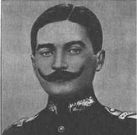

2
HER ZAMAN ASKER OLMAK İSTEMİŞTİ
Askerî Eğitim
GAZİ’NİN çocukluk hatıralarına baktığımız zaman onun her zaman asker olmak istediğini görürüz. Evladından ayrılmak istemeyen bir anne olan Zübeyde Hanım’dan gizli olarak askerî okul imtihanına girmiş ve kazanmıştır. Hatta annesini ikna etmek için babasının ona emanet ettiği bir kılıcı da delil göstermiş, asker olmasının babasının vasiyeti olduğunu belirtmiştir. Tabii o dönem için Osmanlı’daki en nitelikli eğitimin askerî okullarda verilmesi de bu kararında rol oynamıştır. Yine çocukken, askerî rüşdiyeye giden komşusunun oğlunun ve çarşıda gördüğü subayların kıyafetlerine çok imrendiğini ve kendine onları örnek aldığı bilinmektedir.
Çok kısa bir süre Mülkiye Rüşdiyesi’ne gittiyse de imtihanı kazanınca Selanik Askerî Rüşdiyesi’ne geçiyor.-5 Çalışkan bir talebedir, hatta ona “Kemal" adını çok sevdiği bir hocası olan ve matematik derslerine giren Yüzbaşı Üsküplü Mustafa Sabri Bey vermiştir.
Askerîyedeki eğitim fevkaladeydi ve her şeyden evvel düzenliydi; ayrıca matematiğe ve coğrafyaya çok önem veriliyordu. Tarihe demiyorum, matematik ve coğrafyaya çok önem veriliyor ve lisan eğitimi önde geliyordu. Atatürk, coğrafyanın faydasını Çanakkale’de gördü. Hatta her yerde gördü, zira, matematik ve coğrafya kurmay eğitiminin vazgeçilmez safhasıdır. Gerçi Mustafa Kemal piyadedir, ama topçu olmak en önemli şeydir, imtiyazlı sınıftır. Topçunun iyi matematik bilmesi lazımdır. Kaldı ki topçu okulunun adı Mühendishanedir; çünkü 18. asrın topçu subayı hendese bilen bir mühendistir.
18.-19. asır mekteplerinin mezunları bu yönde ilerliyor. Yabancı dil, coğrafya, matematik ve fizik bilgisiyle dünyaya çıktığı zaman ecnebi muarızlarıyla doğrudan doğruya konuşabilecek tipte memurlardır, askerlerdir. Kurmay subaylar ise, hangi sınıfa mensub olursa olsun, öbür dalları öğrenip benimsemek zorundadır. Sivil memurlar (mülki erkân) arasında hariciyecilerde lisan bilen azdı demiyoruz. Hariciyeci lisan bildiği için Hariciye Nezareti’ne giren adamdır. Öyle, herhangi bir yerden yetişmiş değildir. Mülkiyede (SBF) bile kimse diplomasi bölümünde lisan bakımından yetişemez, öyle bir şey yoktur. Lisan bakımından evvelce hazırlanmış genç o bölümde okuyabilirdi, imtihanla alınırdı. Ancak düz gelip de dünyaya açılacak bir lisan eğitimine, lisan bilgisine sahip olan insan Harbiye ve Erkân-ı Harbiye mekteplerinden yetişirdi. Bu okul çok önemlidir ve askerî eğitimin Mustafa Kemal’in hayatındaki rolünü asla küçümseyemeyiz.
Nasıl Bir Talebeydi?
O çağda bütün Avrupa’da ve her sahada olduğu gibi, askerî eğitimde mühim olan edebdir. Sorarsınız, sorunuza cevap verilir, eğer sorunuz saçma ise gülünür ve sizle alay edilir. Sırf hoca değil, sınıf arkadaşlarınız tarafından da tahfif edilirsiniz ve bu huyunuzdan vazgeçersiniz. Ama ciddi soru soruyorsanız, bu hocayı etkiler. Hele hocanın sorduğu sorulara cevap veriyorsanız - çünkü klasik eğitimde soru esastır, hoca da sık sık talebeye sorar- iyisinizdir ve bu tip talebe hem sevilir hem de saygıyla karşılanır. Anlaşılan Mustafa Kemal de ciddi sorular sorabilen bir talebeydi.
Osmanlı Kurmay Subayı
Osmanlı kurmayları pek çok konuda bilgi sahibi olurlardı. 1826’da kapıkulu askeri ve eyalet askeri kaldırılınca, Devlet-i Aliyye yirmi yıl kadar ordusuz yaşadı. Redif kıt’aları ve teşkil edilmekte olan yeni ordunun talimiyle uğraşıldı. Nihayet Kırım Savaşı sebebiyle bu durum sonlandı. Bu arada, 1849’da Avusturya ve Rusya’nın müşterek ordularının katliamında bize sığınan Macar ve Leh kuvvetlerine ve subaylarına (Macar Cumhurbaşkanı Kossuth Lajos ve General Bem [Murad Paşa]) ve mesela eğitimde çok faydalı olan, Konstanty Borzecki (sonra Mustafa Celâleddin Paşa, Karadağ’da şehid düştü) gibi asker olmayan yardımcı kuvvetlerine dahi teknik donanım konusunda çok şey borçluyuz. Tarihimizin bir teferruatı değildir. Ordu yeni kurulurken bir kurmay mektebi (Erkân-ı Harbiye) kuruldu. Bu tarz bir mektep bütün kara Avrupası’nda, yani, Prusya, Avusturya, Rusya ve Fransa gibi kara orduları kuvvetli memleketler bile 3-5 sene farkla kurulmuştu. Bu okul kurulunca otomatikman elit bir asker sınıf ortaya çıkmıştı. Burada yetişenler asker oluyorlar ama başka bilgi ve beceri de elde ediyorlardı. Eminim ki çok uzun zaman fihriste bakıp nizamname aramayı, lügate bakıp kelime öğrenmeyi bir tek bunlar biliyorlardı. Diğer eğitim branşları buna müsait değildi. Matematikçi olmamalarına rağmen logaritma cetveli bakmayı biliyorlardı. Mesela Atatürk biliyordu. Tabii bir de konuşmaya çok dikkat ederlerdi.
Atatürk yapı olarak sinirli bir adamdır. Belirli bir dönemden sonra haşin davranmış olabilir ama kurmay subaylar üslûb olarak hiçbir zaman çok açık konuşmazlardı. Sözle hakareti çok ölçülüydü ve bizim alıştığımız politikacının, hatta alıştığımız bürokratın üslubuna hiç benzemezdi. Fakat bazen ağır mizahla hırpaladığı da görülürdü. Bu mesela İran Şahı Rıza Pehlevi’nin cezalandıracağı bürokratı bastonla dövmesi gibi bir davranışla mukayese edilmez. Bürokrasinin üslûb kaybına uğradığı günümüzde, bu hal bilhassa görülüyor. O günün kurmayı ile Ankara bürokrasisinin herhangi bir adamı arasında dağlar kadar fark vardır. Hatta şimdi daha çok fark vardır. Atatürk’ün, teknik bir adam olarak, ne filolojiyle ne de beşeri bilimler dediğimiz bilimlerle alâkası vardı. Ama o zamanın kıt Türkiyesi’nde üniversite ıslahatında İstanbul Edebiyat Fakültesi’ni ve bozkırın sınırında Dil ve Tarih-Coğrafya Fakültesi’ni kurdu. Dil-Tarih, Ankara Üniversitesi’nden dahi eskidir. Sümeroloji, Hititoloji, Hindoloji gibi bölümleri neden kuruyor? Bir kere anlıyor ki Türk tarihini anlamak için dünya tarihini bilmek lâzımdır. Bir kurmaya özgü örgü ve inşa anlayışı göze çarpmaktadır.
Binaenaleyh, istesek de istemesek de Türkiye askerî bir toplumdur. Dolayısıyla demilitarizasyon, yani askersizleştirme projesi fevkalade manasız ve üstünde düşünülmesi gereken bir süreçtir. Bu bir medeniyetle, onun tarih ve coğrafyasıyla özellikle ilgilidir. Kim ne derse desin, Türklerin önde gelen önderleri, yöneticileri, yönetici vasfa sahip olanları asker saflarından çıkmıştır. Mustafa Kemal Atatürk de yani Mustafa Kemal Bey, sonra Mustafa Kemal Paşa da kurmay eğitimden geçmiştir. Mimar Sinan da askerdir; 19. asrın haritacıları, 16. asır gibi 19. asır coğrafyacıları da, ressamlar ve Batı müziğini getirenler de bu saflardan çıkar. Modern tıb, veterinerlik, mühendislik orduda 18. asrın reformları gereği olarak çıkmıştır.
Kurmay eğitim; 19. yüzyılda orduların coğrafya, tarih, teknik ve beşerî ilimlerle iç içe geçerek sevk edilmesi için teşekkül eden, hem muharib hem de entelektüel ve bilgin bir sınıf yetiştirmek demektir. Bu, 19. yüzyılın büyük bir olayıdır.
Osmanlı’da kapıkulu ocaklarının kaldırılmasından sonra modern ordu kurulurken, musikiden cerrahi sınıfa, veterinere, kimyagere, eczacıya, mühendise kadar ordu kendini yeniden düzenlediği gibi, tekrar o elemanlarıyla, sevk ve kumanda içinde kurmay eğitimine geçmiştir. Bu konuda biz büyük Batı devletleri ile eş zamanda yola girdik. Hem Osmanlı-Rus Savaşı’nda (187778), hem de Birinci Dünya Savaşı’nda bunun etkileri görülür. Osmanlı-Rus Savaşı sırasında ordularımızın kurmay kapasitesinin yüksek olduğu, savunmanın o sayede o şekilde yapılabildiği görülür. Silahlar iyi kullanılmıştır. Bunu sadece biz değil önemli Rus harb tarihçileri de yazmıştır. Karşı tarafın da mühendisliği iyi olduğu için, General Totleben gibi başarılı mühendis kumandanlar bizim tarafı zorlamıştır. Bu nedenle de bizim orduda yeniden bazı branşlarda mühendislik eğitimine önem verilecektir.
Birinci Dünya Savaşı’ndan evvelki büyük ve kozmopolit devletlerin bir kısmı İngiltere ve Almanya gibi çok sanayileşmişken bir kısmı ise az gelişmiş sanayiye sahiplerdi. Rusya gibi, neredeyse Osmanlı kadar sanayide geri kalmış fakat bizden daha iyi durumda olanlar da vardı. Bu devletlerin müşterek tarafı çok uluslu olmalarıydı ve çok uluslu devlet sistemi bilhassa Rusya, Avusturya ve Osmanlı’da bir problemdi. Bu devletlerdeki iç yapı dolayısıyla kurmay sınıfı askerlerin iyi eğitim görenleri siyasetle iç içeydi ve belli bir ideolojileri vardı. Yaşadıkları vatan ve kumanda ettikleri ordu, bu problemden kurtulamıyordu. Mesela, Macaristan ve Avusturya ordularında müthiş itişme olduğu görülüyordu.-10
Osmanlı ordusunda bu kadar büyük etnik çatışma yoktu ama alttan alta çok örtülü bir gerilim söz konusuydu. “Arabistan ordusunda Arap uşağı arttı, Anadolu’dan asker yollayın" diye bir irade vardır. Anadolu’dan Türk uşağı olması lazımdı çünkü ordu o konuda çok hassastı.
Harb eden bu devletlerin büyük bir kısmı zirai bünyeli ülkelerdi. Fransa’da bile köylü nüfusu % 50’nin üzerindeydi. Almanya ve İngiltere öyle değildi, teçhizatta donanımda büyük farklılıklar vardı ama hepsinin ortak özelliği kurmaylarının ve diğer subaylarının eşit bilgide, eşit kabiliyette olmasıydı. Bizimkiler ise daha fazla savaş görmüş olmalarından ötürü bir yönüyle daha öndeydi.
Atatürk askerlik hayatına siyaset yaparak ve isyan bastırarak başlamıştır. Suriye çöllerinde aşiretlerle isyan bastırmak çok zordur. Askerler diplomasi öğrenirlerdi. Mesela İsmet Paşa’nın Yemen icraatını okumak lazımdır. Vali ve kumandanın İzzet Paşa olduğu o dönemde İmam Yahya’nın ayaklanan aşiretleriyle nasıl bir anlaşmaya girdikleri bir diplomasi örneğidir. Birinci Dünya Savaşı’na girdiklerinde zaten üç senedir Trablusgarb ve Balkanlar’da harp ediyor oldukları için coğrafyayı iyi biliyorlardı. Bu bakımdan burada bir liderlik vasfı öne çıkıyordu. Bu kumandanlar hayatın ne olduğunu erken öğrenmiş, çok genç ama yaşlanmış kumandanlardı.
Biyografilere bakıldığı zaman, mesela Enver Paşa’ya tecrübesiz deniliyor. Birdenbire imparatorluk ordularının başkumandanı olabilir mi, sorusu sorulabilir. Fakat öbür taraftan baktığınızda bunların albay, yarbay olanları hakikaten büyük orduların generallerinden daha fazla çatışma ve savaş tecrübesine sahiplerdi. 1914’te Avusturyalı bir generalin savaş tecrübesi ne kadardır? Rus-Japon Savaşı’ndan zedelenip gelmediyse Rus’un savaş tecrübesi vardır. Ruslar başka yapıdaydı ve içlerinde Rus-Japon Savaşı’nı yaşayıp sonradan Kızıl Ordu’ya giren İgnatieff gibi aristokratlar vardı. Daha sonra ayrı bir başlıkta değineceğimiz gibi, Alexei Brusilov’un tecrübesi çok, halktan gelme birisiydi. Buna karşılık mesela iyi talim ve iyi teori dışında Almanya, 1914’te savaşa girdiğinde çok savaş bilmiyordu. Nitekim Rusya’da biraz da tesadüflerin yardımıyla büyük bir zafer kazanıldı; Tannenberg Zaferi. Daha sonra da değineceğimiz gibi Almanlar, Fransa kapılarında ise durduruldular. Marne Cephesi’nde Alman askerleri durakladı.
Burada konunun bütünlüğü açısından belirtmek gerekir ki, İsmet Paşa o zaman orduda tanınan bir kurmay ve Genelkurmayda III. Şube Müdürü idi. Onun doğrudan Enver Paşa’ya, yani Başkumandan Vekili’ne yazdığı bir raporda “Bu adamlarla müttefik olunmaz. Marne’daki duraklama zaaflarını gösteriyor” diye sorunu hemen teşhis ettiği görülmektedir.
İsmet Paşa’nın çok tecrübeli bir kurmay olduğunu görmek için yaptıklarına bakmak gerekir. Trablusgarb’ta yoktur ama Yemen’de vardır ve o sıra paralel bir kavganın içindedir. Balkan’ın ne olduğunu biliyordu ve aynı zamanda karargâh subayıydı.
Bu kurmaylar çok lisan bilirlerdi. Mesela Enver Paşa’nın dört lisan bildiği biliniyor.
Nureddin Paşa kurmay değildir ama birkaç dil bilir ve asıl Kut’ül Amare kahramanı odur.
Şimdi bu yapıyı bilen insanların içinde ister istemez dış dünyaya karşı bir rekabet vardır. Mustafa Kemal Paşa ve arkadaşları,
1902 senesinde Harbiye onların başında Mektebi’ni bitiren Mustafa
Esad Paşa gibileri, KemaL GenÇ subay Parlak
Alman taraftarı olmak için yeterli sebeb görmezler. Bu askerlerin gözünde Fransız ordusu demokratik bir ordudur ve bunun delili vardır. Bunların dünyaya bakışları herhangi bir mülkî memurdan farklıdır. O yüzden buradan lider çıkmıştır. Çünkü bu kimseler çok boyutlu bakış açısına sahiplerdi. Mesela Bulgaristan’da ataşemiliter oldu diye bir adamın bu kadar çok şey görüp anlaması mümkün değildi, ancak, Mustafa Kemal anlıyordu. Balkanlar üzerine yazdığı raporları, bizim Karadağ’da elçimiz, okuldan arkadaşım Birgen Keşoğlu -artık orada değil- okudu ve böyle muhteşem bir rapor görmedim dedi. Çünkü Mustafa Kemal Bey Çetine’ye, Bükreş’e yani Karadağ ve Romanya’ya da akredite, dünyaya çok başka türlü bakıyor, zaten kendisi de oranın bir parçası.
Alman sevmezler ve Alman fennî askerîyesini dereceli ve çok başarılı olduğu için Erkân-ı Harbiye Mektebi’ne (Harb Akademisi’ne) alındı.
Manastır Yılları
Manastır, o dönem Selanik’le birlikte Makedonya’nın en önemli kentlerinden biriydi. Bugün Makedonların Bitola dedikleri şehirde Askerî idadi binası halen durmakta ve üst katı Atatürk Müzesi olarak da kullanılmaktadır. Günümüzde dahi az da olsa Türk nüfus var ve Slavlar ile Müslüman Arnavutlar bir arada yaşıyorlar.
1896’nın Mart ayında Manastır’daki eğitimine başlayan Mustafa Kemal’in fikir hayatı burada temellenmiştir. Arkadaşlarından birisi olan Ömer Naci -ki meşhur İttihatçı hatiplerden biri olacaktır- ona edebiyat ve şiir merakı aşılayacaktır. Ayrıca hocaları arasında yer alan Kolağası Mehmed Tevfik Bey, tarih sevgisi ve muasır milliyetçilik gibi fikirleri ile onu etkileyecektir. Namık Kemal, Mehmed Emin Yurdakul gibi vatanperver ve milliyetçi şairlerin ve Fransız İhtilâli’nin etkisiyle hürriyetçi fikirlerin de bu dönemde zihinlerde yer ettiği anlaşılıyor.
Makedonya’nın Slav milliyetçiliği ve Frankofil havası Bitola’da (Manastır) hâkimdi.
İstanbul’daki Öğrencilik Yılları
1899 yılında Selanik’ten bir vapura binerek İstanbul’a gider. Böylece payitahtı ilk defa görecektir. 18 yaşındadır. Önce Harbiye-i Şahane sonrasında ise Harb Akademisi’nde (Erkân-ı Harbiye) okuyacaktır. Selanik’ten beri dönem arkadaşı ya da alt/üst devresi olan pek çok subay ileride tarihî birer şahsiyet olarak karşımıza çıkacaklardır.
Milliyetçilikler Dönemi
Osmanlı bir imparatorluktu ve bünyesinde farklı milletlerden toplulukları barındırıyordu. 18. asırdan itibaren Osmanlı İmparatorluğu’nun parçalanmasını Büyük Fransız Devrimi’nin getirdiği milliyetçilik fikrine bağlayarak açıklamak oldukça yetersizdir. Çünkü imparatorluğun parçalanmasında etkin olan milliyetçilik, 15. asırdan beri Balkan milletlerinin bir ürünüdür. Daha doğru bir deyişle, Balkan milliyetçiliği ile Fransız Devrimi’nin getirdiği milliyetçilik arasındaki farklar benzerliklerden daha fazladır. Fransız Devrimi’ndeki eşitlik, kardeşlik, özgürlük ilkeleri, Fransa toprağının Fransızca konuşan bütün insanlarını vatandaşlar (birbirlerine nazaran kanuni imtiyazları olmayan hür vatandaşlar) olarak mütalâa etmekten ibarettir. Fransız Devrimi, kraliyetle birlikte kiliseye karşı yapılmıştır. Balkan milliyetçiliğinin ise temel mihrakı kilisedir. Tıpkı bütün Doğu Avrupa milliyetçi hareketleri gibi Balkanlar’da da özgürlük bağımsızlık demektir. Başka kavimlerin bağımsızlıkçı milliyetçiliği en sonunda Osmanlı ülkesinin asıl unsuru olan Türklerde de bir kişilik buldu ve Türkçülük akımının gelişmesine yol açtı. Balkanlar’da eskiden beri elit zümre arasında bir tür Panslavizm ya da Bulgarlarda olduğu gibi bir tür Bulgar milliyetçiliği vardı. Balkan kavimlerinin bağımsızlık kazanmasında Çarlık Rusyası’nın rolünü abartmak, özellikle Türk ve Rus tarihçilere özgü bir hatadır. Mesela Bulgaristan, kendi örgütlenmesi ve mücadelesi sayesinde, 1877-1878 savaşında olmasa bile, bundan çok kısa bir süre sonra bağımsızlığını alabilirdi. Tam anlamıyla olgunlaşmadan dış kuvvetlerin yardımıyla bağımsızlığını alan Yunanistan’da ise bu sakat yapı epey uzun devam etti ve dış vesayet süregitti.
Balkanlar’daki Slav milliyetçiliğinin doğuşu Fransız Devrimi’nin de öncesine, bağımsızlıklarını kaybettikleri tarihe rastlar. Krijaniç ve Gunduliç’in (Slav Rönesansı, Dubrovnik’te ortaya çıkmıştır) Machiavelli tarzında ilk Slav milliyetçiliğini ortaya çıkardıklarını biliyoruz. Machiavelli, İtalyan devletlerinin bir güçlü hükümdarın (principe) buyruğu altında birleşmelerini isteyen kişiydi. Krijaniç ise bu birliğin, Polonya kralının yardımıyla (15. asır), Gunduliç de Rus çarının yardımıyla (17. asır) oluşmasını istiyorlardı.
Osmanlı
İmparatorluğu dışında
Avusturya’da da Slavlar çoğunluktaydı.
Doğu
Avrupa’daki milliyetçilik sürekli olarak yabancı hâkimiyetine karşı gelişmiştir.
Marksist düşünce buraya geldikten sonra da buradaki milliyetçilik yok olmamıştır.
Eski
Mustafa Kemal Erkân-ı Harbiye Mektebi’ni 1905’te bitirdi ve Kurmay Yüzbaşı oldu.
Yugoslavya’daki milliyetçilik ise Tito’nun, “Herkes milliyetçilik yapsın, ama Yugoslav olduklarını unutmasın" düşüncesine dayanırdı.
Avusturya Başbakanı Prens Metternich, Osmanlı topraklarında oluşan Yunan milliyetçiliğini desteklemedi; çünkü böyle bir milliyetçilik akımı kendi imparatorluğundaki (Avusturya) milliyetçilik hareketlerini de etkileyebilirdi ve Yunan ayaklanmasında Osmanlıların yanında yer almıştı. Buna karşılık Rusya bile Yunanistan’ın yanındaydı. Yeni kurulan Yunanistan, bu tarihten itibaren kendisine Navarin’de yardım eden devletlerin yanında yer almıştır. Ayrıca Bavyera’dan ithal edilen bir kralı (Prens Otto) başa geçirmiştir. Yunanistan komşularıyla iyi ilişkiler kuracağına, Batı’ya yönelmiştir. İdeoloji olarak da halen Batı’dan beslenmektedir. Bu oldukça oturmuş bir sistem ve dünya görüşüdür.
1877-78 Osmanlı-Rus Savaşı sonucu Romanya ve Bulgaristan kurulmuştur. İhtilâlci Balkan milliyetçileri dışında, ılımlı unsurlar Bulgaristan’da ve sonraları Arabistan’da Avusturya-Macaristan tipi çift taçlı bir devlet istemişlerdir. Bu fikri savunanların başında Bulgaristan’da “Gizli İhtilal Komitesi" ve sonra başbakan olan Stefan Stambulof ve Arap ülkelerindeki el-Kahtaniyya grubu gelir. Stefan Stambulof, Sultan Abdülhamid’e Osmanlı Padişahı ve Bulgar Çarı olarak iki devletin başında olmasını önermişti. (Berlin Kongresi’nden sonra Muhtar Bulgaristan Prensliği’nde başbakan ama muhtariyet ve yarı bağımlılık dolayısıyla “reis-i müdiran" diye anılan Stambulof’tur. Politikası Rusya’dan çok Batı’ya yöneliktir.)
Osmanlı İmparatorluğu 15. asra kadar yayılmasında Yunan unsurlarını imparatorluğa almıştır. Burada Osmanlı milletleri arasında eşitlik sorunu ortaya çıkıyordu. Balkanlar’daki bütün Slavlar Rum Patrikhanesi’ne bağlanmıştır. Rumlar imparatorluk içinde imtiyazlı durumdaydılar. Bulgarlar Rum Patrikhanesi tarafından daha çok eziliyordu. 18. asırda Athos Dağı’ndaki Hilander manastırının Bulgar rahibi Paissiy Hilanderskiy ilk olarak Bulgar tarihini kaleme almıştır (Istoriya Slavyanobolgarskaya; 18. asır sonu). Bu bir ulusalcı manifesto idi. 19. asır boyunca Bulgar milliyetçiliği, ön planda, Rum sultasından nasıl kurtulacağını hesaplıyordu. Bulgar Katolik Kilisesi’nin kuruluşu da bu döneme rastlar.
Bizans döneminde Süryani ve Keldanilerin, Osmanlı zamanında da Ermenilerin Roma Katolik Kilisesi’yle ilişki kurmaları çok zordu. İdari ve mali olarak bu kiliselerin Roma ile bağı yoktu. Bağ, ruhanîydi. İbadetleri de diğer Katoliklerin aksine Latince değil, kendi dillerindeydi. Bu durum bazı Bulgarları cezbetti ve kendi Katolik kiliselerini kurma yoluna giderek Ortodoks kilisesinden ayrılmak istediler. Bu, dinî meseleden değil, milliyetçi meseleden kaynaklıydı. Balkan Slavlarının kurtuluşunda “kilise” aktif bir rol oynamıştır. Mamafih kısa zamanda Bulgarlar tarihî ve millî kilise bağımsızlıklarını elde ettiler ve Bulgar Eksarhlığı Ortodoks akaîdine bağlı, ama Fener Rum Patrikhanesi’nden ayrı olarak teşkilâtlandı. Fener Patrikhanesi bu olaya o kadar karşıydı ki, Balkanlar’da başka Ortodoks kiliselerin bağımsızlığını tanıdığı halde, Bulgar kilisesinin bağımsızlığını 1945’e kadar tanımamıştır.
18. asırda Balkanlar’da bir millî burjuvazi oluşmaya başlamıştır. Balkanlar’da Osmanlı iktisadiyatı 15. asırdan beri tekâmül halindedir. Bundan başka, gelişen Avusturya ve Rusya sanayii için hammadde temini, köylü ve zengin çiftliklerin teşekkülü ve ayrıca ithal edilen kaçak mamullerin satışı bunu sağlamıştır. Öyle ki, 18. asrın sonunda esnaf loncaları çözülmüş, para kredi hareketleri gelişmiştir. Zayıf kilise eğitimi yanında 19. asırdan itibaren laik maarif de gelişmeler kaydediyordu. Esasen dinî kurumların önemli rolüne rağmen Balkan milliyetçiliği laik karakterlidir.
Bu durum Arap milliyetçiliğinde de belirgin bir niteliktir. Sebebi ise, Osmanlı milletlerinin aynı dili konuşsalar bile, aralarındaki din ve mezhep farkıdır. Mesela Bulgarlar içinde “Pomak" denen yaygın bir Müslüman grup vardı. Arnavutluk’ta Müslümanların haricinde, kalabalık bir Katolik grup ve Ortodokslar da vardı. Hepsi Hıristiyan olsa da aralarında, Ermenilerde rastlandığı üzere, mezhep farkı vardı. Araplarda da Müslüman oldukları halde mezhep farkı ve çeşitli Hıristiyan gruplar vardı. Arap milliyetçiliği, 19. asrın sonunda ortaya çıkan ve daha çok imparatorluk merkezileştikçe güçlenen bir akımdır. Batı tesirinin büyüklüğü, ilk Arap milliyetçilerinin Hıristiyan olmaları veya Hıristiyan Batı tesirinde kalan kimseler arasından çıkmasıyla anlaşılıyor. Arap milliyetçiliği hiçbir zaman Balkanlar’daki kadar güçlü ve yaygın olmadı. Üstelik Araplar bugünkü Arap topraklarını işgal ettikleri zaman, buralarda yaşayan Arap olmayan kimseleri Araplaştırmışlardı, ancak, bazıları ise Hıristiyan kalmışlardı. Arap dünyası üzerinde dil birliği ötesinde bir dinî birlik yoktur. İslam hâkimdir ama onun da mezhepleri vardır.
Osmanlı İmparatorluğu içindeki milliyetçilik hareketlerini bugünkülerden ayıran en önemli vasıf, bu ulusların belli tarihlerinin bulunmasıdır. Bunlar tarih içinde kurumlaşıp siyasal topluluk oluşturabilmişlerdir. Tarihte bir Sırp Devleti, bir Bulgar Çarlığı vardır ve bir geçmişe ve siyasal kültüre sahiplerdir. Bugünkü Afrika, hatta bazı Asya ülkelerindeki halklar gibi değildirler.
Osmanlı İmparatorluğu’nda Türk Milliyetçiliği
19. asırda Avrupa’da çok uluslu üç imparatorluk vardı: Avusturya-Macaristan, Rusya Çarlığı ve Osmanlı İmparatorluğu. Bunların hükmettikleri topraklarda, istisnasız biçimde, önemli geçmişleri olan milletler bulunuyordu. Ruslar Polonezlere hükmediyordu ama Polonezler 200 yıl önce Ruslara hükmettiklerini hatırlıyorlardı. Bu durum, söz konusu imparatorlukların hepsi için geçerlidir. Tarihî bir romantizmden gelen bir duygu içindedirler ve tabiatıyla, milliyetçilik buralarda bazı akımlar çıkarmıştır:
1. Rusya’da Pantürkizm çıktı ve bilimsel olarak Avusturya-Macaristan bunu destekliyordu. (Merkezi Budapeşte Üniversitesi’ydi.)
2. Avusturya’da Panslavizm gelişti. (Merkezi talebe hareketleri açısından Viyana Üniversitesi’ydi. Ama ilmi Panslavizm Prag Üniversitesi ve aydın çevrelerinde gelişti.)
3. Osmanlı İmparatorluğunda da Slavcılık vardı. Berlin Kongresi’nden sonra bu yok olduğu için bir İslamizm çıktı.
Pantürkizm, Ziya Gökalp ve İttihat ve Terakki’nin söylediğine uygun olarak, siyasi bir birleşmeyi hedef alan bir milliyetçilik değildi. Amaç için siyasal bir örgütlenme yoktur. (Bu Balkan Savaşı’na kadar geçerli olacaktır. Bu harbden sonra ise büyük imparatorluk toprakları elden çıkınca, buna ihtiyaç duyulacak ve Turancılık siyasi program haline getirilecektir.) Bu olaya kadar bir siyasal programdan değil, daha çok kültürel bir Türkçülükten söz edilebilir.
İlk defa İsmail Gaspıralı, Osmanlı İmlasını ıslah ederek ve Osmanlı Türkçesini ayıklayarak bir gazete çıkardı. Bu gazete Rusya’da bütün Türkçe konuşanlara yayıldı ve bir okuma-yazma hareketi başladı. Bu ilerici kimseler çarlık ve teokratik devlet sistemine karşı mücadele ediyorlardı. Ama bütün mahallî bölgelerde de Çarlıktan önce kendi zadegânı tarafından taşlandılar. Çünkü anayasal, laik ya da sosyalist nitelikli kişilerdi.
Osmanlı İmparatorluğu’nda ise ilk önce Türkçüler, daha çok, işe edebiyatçılıkla başlamışlardır. Polonya asıllı ve 1859 mültecisi olan Mustafa Celaleddin Paşa ilk Türk milliyetçi eserini yazmıştır (Les Turcs Anciens et Modernes) Türkçülüğü bir ırk meselesi olarak da ele almakta, bir anlamda modern Türk milliyetçiliğinin babası sayılmaktadır. Bir Arnavut olan Şemseddin Sami, ilk Türkçe ansiklopedi olan Kamûs-ül Âlâmı çıkarmıştır.-^12 Ahmed Vefik Paşa’nın ise dil konusundaki milliyetçiliğine sınır yoktur. Fakat tartışmalı olarak, Türkçülük Ali Suavi’ye mal edilmektedir. Nerede İslamcı, nerede
Doğucu, nerede Batıcı olduğu belli olmayan karışık birisidir. Harflerin değişmesini, sadeleşmeyi isteyen ilk isimdir. Aslında Arap harflerinin nasıl ıslah edileceği Tanzimat’tan beri söz konusu olmuşken (Azerbaycanlı yazar ve dil konusunda uzman Mirza Feth Ali Ahundzade), tutucusu bile en azından bir ıslahat öngörmüştür.
Burada bir konuya daha değinmeliyiz. Ben o kuşağın ne idik, ne olduk diye birdenbire çöküntüye uğradıklarını zannetmiyorum. Yaşım icabı ben mesela Rusya muhacirlerini, mültecilerini tanıyorum. Onlar için imparatorluğun çökmesi problemdi, koca Rusya’yı batırmışlardı. Kimin batırdığı sorulsa, her zaman komünistleri suçlarlar. Tabii niye komünistlerin geldiğini de pek tartışmak istemiyorlar. Aralarında Rasputin ile Prens Yusupov’a suç bulanlar vardı. İleri yaşlarıma kadar böyle irrasyonel gelen tartışmaları dinledim ama o büyük imparatorluk batacaktı, gidecekti diyen yoktu. Hatta sonradan şunu gördüm; sonraları
Mustafa Kemal, Şam’da bulunduğu dönemde, yakın arkadaşları ile beraber "Vatan ve Hürriyet” adındaki gizli cemiyeti de kuracaktı, 1906. komünizmden yaka silken ama öncesinde de çarı devirmek için elinden geleni yapan bir sürü milliyetçi, “Keşke devirmeseymişiz" demeye başladılar. Osmanlı İmparatorluğu’nda halk çok çabuk bir tevekkülle kabul etti ve ortaya bir monarşist parti çıkmadı. Politikacı zümre yeni hayata intibak etti. Belki bu durum yenilginin tasfiyesinden ileri geliyor. Bir diğer ifade ile baştaki yenilgi statüsü tasfiye edildi ve o diriliş insanlara yeniden ayağa kalkmak için bir ümit verdi.
İttihat ve Terakki
Şimdilerde, yeniden ittihatçıları methetme dönemi başladı. Tarih, yakasına yapışılıp hesaplaşılacak bir şey değildir. Hâlbuki
Türkiye’de, sabah akşam ittihatçılara küfür eden hasta kafalı insanlar vardır. Ancak şu unutulmamalıdır ki abartma çok tehlikeli bir üslubdur; ittihatçıların kendilerine göre vatan sevgileri vardı, kendilerine göre cesurdurlar.
Örgütlenmeyi çok iyi bilen adamlardı,komitacıydılar ve aralarında bağ vardı. Ama hepsi aynı derecede ilkeli değildi. Mesela, Cemal Paşa saltanatı ve gösterişi çok severdi. Enver Paşa, Sultan’la evli olmasından ötürü lüksten çok uzak olamazdı. Talat Paşa ise ayrıdır. Sadrazamken, Almanya’dan karısına hediye diye süpürge getirirdi, fakat masraf çok olur diye sadrazam konağına gidemez, Babıâli’ye yakın bir yerde kirada otururdu.
İttihatçılar teşkilatçıydılar, orduyu modernleştirdiler, Türkiye modernleşmesini götürdüler. Fakat müthiş hatalar yaptılar ve imanları zannedildiği kadar kuvvetli değildi. Biz millet olarak devlet adamından çok büyük iman beklemeyiz, gerçeği tanıması yeterlidir. Mesela bir devlet adamının, “Harb’e girmezsek bizi yerler" diye paniğe kapılmaması gerekir. İttihatçılar orduyu da modernleştirmiş oldukları için beklemeleri ve saldırıya uğrarlarsa saldırmaları gerekirdi. İlla ki bir tarafa katılmanın manası olmadığı gibi Almanya gibi zayıf kalan bir kuvvetle ittifak etmek çok lüzumsuzdu. Biz Almanya’yla ittifaka ve harbe girdiğimiz zaman Almanya’nın başarılı olamayacağını akıllı kurmaylar her yerde söylüyordu. Mesela İsmet (İnönü) daha önce de işaret ettiğimiz bir raporunda “Marne Cephesi’ndeki duraklamasından sonra Almanya’ya güvenilmez” diyordu. Almanların Tannenberg’de Rusları yenmiş olması çok anlamlı değildi, zira, Ruslarınki çok mücehhez bir ordu sayılmazdı. O sırada Rusya’nın berbat bir kumanda kademesi vardı ve tıpkı İkinci Dünya Savaşı’nda olduğu gibi üç asker bir tüfekle harbe giriyordu. Böyle bir orduyu, kumandanları da iyi olmayınca, Tannenberg bataklıklarında çevirmek zor olmamıştı. Hindenburg’u küçümseyemeyiz, ama Marne Cephesi’nde doğudan batıya asker sevk edilmesine rağmen muvaffak olunamamıştı. Özetle Osmanlı İmparatorluğu İngiltere’yi oyalamak için Almanlar tarafından harbe alınmıştır. Şüphesiz Almanlar ve Avusturyalılar Osmanlı ordusunu biliyorlardı. İngiltere ve Fransa, 1912-13 Balkan hezimetimiz üzerine bizi küçümsemişti. Bilindiği gibi o hezimet büyük ölçüde siyasi nedenlerden kaynaklanmıştır. Kumanda kademeleri birbirlerine düşmüşlerdir. Eski Kâmil Paşa Hükümeti sıradan bir hükümetti, Nâzım Paşa Halaskâran grubundan olup İttihatçıların muhalifiydi ve maalesef askerlik değil, siyaset yapmıştı. İttihatçıların Balkan Savaşı içinde entrikaları vardır ve Kâmil Paşa Hükûmeti’nin lehine yazılacak zaferlerden çekindikleri bilinmektedir. Midilli’nin zaptı da böyle olmuştur. Mesela Rauf Bey çok milliyetperver bir deniz subayı olmasına rağmen parti militanlığı onun önüne geçmiştir ki parti militanlığı her türlü iş birliğini ve aklı ortadan kaldırır. Maalesef Averof gibi ortalama bir zırhlı kuzeydeki Yunan adalarını almıştır. Buna müsaade edilmemesi gerekirdi, ama orada bir hamiyetsizlik vardır. Mesela Selanik’e Tahsin Paşa gibi mazide hiçbir varlık gösteremeyen, iyi sicili olmayan bir adamı kolordu kumandanı tayin etmişlerdir. Selanik, çok önemli bir ovanın ortasında müstahkem bir mevki ve Avrupa-i Osmanî’nin en büyük şehridir. Bunu buraya tayin etme sebepleri Abdülhamid’in zulmüne uğraması, yani menkub olması imiş denilmektedir. Abdülhamid’in hep iyi adamlar sürdüğü gibi bir inanç oluşmuştu. Oysa Abdülhamid hürriyetperverleri sürdüğü gibi ahlaksız, işe yaramaz adamları da sürmüştür. Hasan Tahsin Paşa maalesef koskoca kolorduyla direnmeden Yunanlılara şehri teslim etmiştir. Biyografisinde, topladığı paraları Nice’te yediği söyleniyor. Böyle adamların kullanıldığı bir gerçektir. Mahmud Şevket Paşa, Balkan Savaşı sırasında tayin edildiği cepheyi beğenmeyip, kendisine verilen görevi kabul etmemiştir. Bu, askerlikte büyük suçtur ve o kişiyi kurşuna dizmeyi gerektirir. Hâlbuki darbeden sonra Mahmud Şevket Paşa’yı sadrazam tayin etmişlerdir. Bunlar yeni partizanlık göstergeleridir ve Türk idare hayatına çok ağır şekilde girmiştir. Ondan evvel partizanlık yoktur, yoldaşlık vardır. Yoldaşlık zayıf bir bağdır. Türk hayatında partizanlık, “ne olursa olsun, bizden olsun" anlayışını hâkim kılmıştır. Parti disiplini ve parti aidiyeti bizimkinden çok daha uzun ve kuvvetli olan Avrupa toplumlarında partizanlık zayıfladı ve birçok alanda hiç doğmadı. İnsanlar az çok liyakate ve sicile bakarlar. Mesela Sosyalist Parti’deki herhangi bir adamı getirip genel müdür yapmazlar ve başka vasfa da bakarlar. Almanya’da, İsveç’te işler daha ciddidir. Bizde ise, tabiri caizse, “odun olsun, bizden olsun" denilir. Bütün partiler, bütün görüşler için bunun böyle olduğunu yaşadığınız hayat içinde görürsünüz. Bu kaçınılmaz bir hastalık olarak girmiştir ve bunun temelleri ittihatçı davranışında, misyonunda yatar. Bunun aşılması son derece zordur. Çünkü Türk cemiyetinin terbiyesi maalesef bir ölçüde bu İttihatçı modeline dayanır. Bu özelliklerinin yanında İttihatçılık, Türkiye tarihinde bir atılımdır, Doğu dünyasında olmayan bir gruptur. İttihatçılar, yeni Türkiye’deki birtakım hastalıklara, totaliteryanizme itibar etmemeyi getirmiştir. Bununla beraber Cumhuriyet işe İttihatçı kadroları eleyerek başlamıştır. Yeni Cumhuriyet kadrosunu İttihatçı olarak görmek bir tartışmanın konusudur. Ancak bu meseleyi ilerleyen bölümlerde daha tartışacağız.
Burada Mustafa Kemal ile İttihat ve Terakki kadrosunun ilişkilerine biraz bakalım. Mustafa Kemal’in sert bir karakteri vardı ve düşündüğünü söylerdi. Karşısındaki Kaiser Wilhelm bile olsa fark etmiyordu. Karakteri öyle olduğu için de İttihat ve Terakki’nin tarzını beğenmiyordu. Belâgatli üslûbu dolayısıyla bilgilerini çok güzel kullanmayı beceriyor ve çok güzel tartışıyordu. O yüzden İttihat ve Terakki’deki merkez heyet, Enver Paşa’nın yakınları, hem siviller hem de askerler Mustafa Kemal’den çok çekiniyorlardı. Çok iyi bir kurmay ve asker olduğu için bir şey yapamıyorlardı. Fakat Enver Paşa’nın iktidarı asla paylaşmayacağı da belliydi. Elbette aynı şey Mustafa Kemal Paşa’da da vardı. Atatürk olmasına kalmadan siyaseten uyanmış ki İttihatçı meseleleri 1926 İzmir Suikastı davasında bitirildi. O suikast davasında işin içine karışanlar kadar, dışında kalanlar da yargılandılar ve Cavit Bey misalinde olduğu üzere idama mahkûm edildiler.
Balkanların etkisiyle 1814’te Odessa’da kurulan Filiki Eteria (Dostluk Cemiyeti) büyük ölçüde Karadeniz limanındaki ve Rusya’daki Yunanlı aydın ve tüccarların toplandığı gizli bir cemiyetti.-1^ Bu cemiyetin defteri ortadadır. Kim ne kadar bağış yapmış, kim ne aidat ödemiş bellidir. Fakat İttihat ve Terakki’nin böyle bir kaydı yoktur. Cemiyet parasız dönmüyordu, herkes cebindekini ortaya koyuyordu. İnsanlar yeminler ediyorlar, üye oluyor, ancak, hiçbir şey söylemiyorlar ve daha da garibi, kendilerine ihanet ettiği söylenen insanlarla bile ilişkilerini devam ettiriyorlardı. Dâhiliye Nazırı Ali Kemal cemiyetteydi ve ayrılmasına ve güya İttihatçılarla kapışmasına rağmen yine de cemiyet mensuplarından destek görmüştür. Linç edildiği zaman zavallı eşi ki Müşir Zeki Paşa’nın kızıdır (o kadar akrabası var, ancak zor zamanda pek bulunmaz) Hüseyin Cahit Yalçın’ın kapısını çalmıştır. Çünkü partidaşlık başka bir şeydir. Ölene kadar birbirlerini tutarlar. Aynı zat henüz İstiklâl Mahkemesi’nin önünden yeni çıkmış, zor kurtulmuştur. Mesela o arada Cavid Bey İzmir suikastı bahanesiyle asılır. Çocuğunu almış soyadını da vererek yetiştirmiştir (Şiar Yalçın). Bu başka türlü bir dayanışmadır ve anlaşılması zordur. Bir şiar vardır, o onların misyonudur. Bu misyon etrafında bir yemin beraberliği vardır. Partide her şey tartışılır, çok hürdür. Orada konuşulan şeyler dışarı çıkmaz. İçerisinde padişahın hafiyelerini bile barındırır, onlar da laf çıkartmazlardı. Oradaki kararlara ve tertiplere kimse ihanet edemezdi.
Mustafa Kemal’in İttihatçılığı
Atatürk de vakti zamanında bütün genç subaylar gibi İttihatçı idi. Ama çok erkenden bu zümreden soğumuş, bırakmış ve erkenden fırka yönetimine karşı tenkitçi bir bakış edinmiştir. Enver Paşa’yla yıldızları barışmamıştır. Enver, O’nu sevmiyordu, Atatürk ise Enver’i bir tehlike olarak görüyordu. Bu ikisi farklı bakıştır. Enver Paşa, Mustafa Kemal’den hazzetmiyordu. Onu konumu itibariyle muhteris, gayr-ı memnun biri olarak görüyordu. Mustafa Kemal için ise Enver, sevip sevmemenin ötesinde tehlikeli birisiydi. İttihatçılık iddiası, ileride Mütareke döneminde menfi bir kavram olarak bilhassa Damat Ferid çevresi tarafından Mustafa Kemal taraftarlarına karşı da propagandası yapılan suçlamadır ve esas amacı Mustafa Kemal’in “millî hareketini” halk nezdinde itibarsızlaştırmaktı. Sonrasında bu propaganda Mustafa Sabri ve Dürrizade gibilerin eliyle fetva şeklinde ortaya kondu.
Kolağası Mustafa Kemal Bey (orta sıra, sağ baştan sekizinci kişi), Selanik’teki 3. Ordu karargâhında, karargâh subayları ile birlikte, 1909.
Atatürk, ittihatçıların menfî taraflarından nefret ederdi. Kendisi de gençken yeminli ittihatçı olmasına rağmen, aşağı yukarı Hareket Ordusu macerasından sonra, binbaşılığından itibaren bu tavır ve hizipçilikten nefret edip, çatışarak kenara çekilmiştir. Bazı arkadaşları da öyleydi ve Halk Partisi’nin içinde de bu tarzı takip etmiştir.
Mesela Aydın’a geldiği zaman “Burada muhalif bir genç var. Serbest Fırka reisi ve hayli etkili" deniliyor. Kastettikleri o zaman daha “Menderes" olmayan, Adnan Bey idi. Anlatılanlar üzerine çok sinirlenerek Adnan Bey’i çağırmıştır. Bunun üzerine Adnan Bey arza başlamıştır ki boş bir insan değildir, zira, askerliğini yedek subay olarak yapmış, İstiklâl Madalyası almış ve Amerikan Koleji’nde okumuştu. Memleketin halini, çiftçinin durumunu, ihmali, bürokrasinin tutumunu anlatıyor. O anda Atatürk'ün tavrı ve yüzü değişmeye başlıyor. “Sen bunları bana bir layiha halinde ver” diyor ve ondan sonraki dönemde onu Aydın’dan mebus yapıyor. Bu bir zihniyettir. Ancak Türk cemiyetinde bu tip liderler çok azdır.
Mustafa Kemal Paşa’nın Askerlik Anlayışı
Mustafa Kemal Paşa çok disiplinli, işini seven ve iyi yapan, çalışkan bir askerdi. Bu konuda, Atatürk'ün 1937’de Afet İnan’a anlattığı bir hadiseyi nakledelim.
Osmanlı İmparatorluğu’nda 1908 Hürriyet İnkılabı olmuştur. 1909’un yaz aylarıdır. Selanik’te kolağası, yani kıdemli yüzbaşı olarak görev yapmaktadır.
Uzun yıllar Osmanlı ordusu hizmetinde bulunan Alman Mareşal Colmar von der Goltz -ki Goltz Paşa olarak tanınacak ve Irak Cephesi’nde vefat edecek, önemli bir askerdi- Makedonya’daki Türk ordusuna garnizon tatbikatı yaptırmak üzere Selanik’e gelecektir. O günlerde 3.
Ordu’nun Kurmay Kurulu’nda görevli olan Mustafa Kemal, Mareşal gelmeden evvel ona sunulmak üzere Selanik civarında bir tatbikatın planlarını hazırlamakla meşguldür. Kumandanı olan diğer paşaları da haberdar etmek istiyor. Paşalar, Kolağası Mustafa Kemal’in bu cüretini hayretle karşılıyor.
Diyorlar ki, “Buraya gelecek olan Goltz bizden ders almak için değil, bize ders vermek için geliyor." Ancak Mustafa Kemal buna şu cevabı veriyor: “Büyük bir asker olan Mareşal Goltz’dan istifade etmek üzerinde durulacak mühim bir husustur. Ancak Türk Erkân-ı Harbiye ve Kumanda Heyeti’nin kendi vatandaşlarını nasıl müdafaa etmek lazım geleceğini gösterebilmeleri elbette ondan çok daha mühimdir. Bir de buraya yorgun gelecek olan Mareşal’e fazla külfet yüklememek de münasip olacaktır kanaatindeyim."
Mustafa Kemal’in bu hareketini doğru bulmayanlar henüz bu kanaatlerini değiştirmemişlerdir. Bunun üzerine Mustafa
Kemal daha da ileri giderek, “Benim hazırlayacağım meseleyi Mareşal’e göstermek ayıp değildir. Bunun aksi ayıptır. Benim planım Mareşal’in fikrine uygun düşmez yahut Mareşal benim eserime ilgi göstermezse, kendi istediğini tatbik ettirmek onun elindedir. Fakat bütün Makedonya’ya şamil olan Türk ordusu kumanda heyetinin hiçbir şey düşünmez ve hiçbir müdafaa tedbiri alamaz insanlardan müteşekkil olduğu zehabını onda uyandırırsak, işte Türklüğe ve Türk askerliğine yakışmayacak hareket bu olur."
Mareşal Goltz Selanik’e gelmiştir ve Splendid Palas’tadır. O günün gecesinde Mustafa Kemal, Mareşal’in yanına gitmek üzere bir davet alır. Mustafa Kemal’i otelin koridorlarında karşılayan Erkân-ı Harbiye Reisi’nin yüzünde müjdeleyici bir ifade vardır. Mareşal’in bulunduğu salona girerken Erkân-ı Harbiye Reisi haberi ona bildirir: Planını Mareşal çok beğenmiştir. Ancak bazı izahat almaya lüzum gördüğünden plan sahibini davet etmiştir. Mustafa Kemal odaya girer ve Mareşal’e planı anlatır. Üzerinde fikir alışverişi yaparlar. Sonuçta karar verilir: Mustafa Kemal’in planı tatbik edilecektir.
Ertesi gün Vardar Nehri havzasında tatbikat başlar. Hatta Goltz Paşa, Mustafa Kemal’i yine yanına alır ve “Bana yardım ediniz" der. Çünkü araziye yabancıdır. Tatbikat bitimindeyse tenkidi yapılır.-^
II. Abdülhamid
1881’de doğan Atatürk’ün ömrünün ilk 28 yılı, Sultan II. Abdülhamid’in idaresine denk gelmiştir. Devletin büyüklerinin, hatta Cumhuriyet’in kurucusunun, yani Kemal Atatürk’ün Sultan Abdülhamid hakkındaki ifadelerini etraflıca araştırmak lazım gelir. Sanıldığının aksine çok kötü ve menfi şeyler yoktur. Abdülhamid’in yaptıkları, yapmak zorunda oldukları ve yapamayacaklarının nedenini araştırmışlardır ki bunun üzerinde durulması gerekir.
Peki Mustafa Kemal de dâhil koca bir neslin kaderini etkileyen Sultan Abdülhamid kimdi? Türkiye’nin artık 7 yıldır devam eden savaştan bezdiği ve klasik imparatorluğun topraklarını kaybedeceği anlaşılan bir zamanda, 10 Şubat 1918’de, Sultan II. Abdülhamid menfasında, yani sürgün yaşadığı Beylerbeyi Sarayı’nda 76 yaşında vefat etti. 1909 yılında, Nisan ayı ortasında Yeşilköy’deki Meclis-i Umumi’nin seçtiği bir heyet tarafından kendisine hal’i tebliğ edilmişti. Hakan-ı sabık bundan sonraki ömrünü menfa yeri olarak seçilen Selanik’te, Yahudi zenginlerden Alatini’nin o zaman için şehrin dışında sayılan köşkünde geçirecekti. Menfası uzun sürmedi. Üç yıl sonra Balkan Savaşı’nın ilk önemli kaybı sayılan Selanik’i terk etmek zorunda kaldı. Yeni yeri Boğazda Beylerbeyi Sarayı’ydı.
Topkapı Sarayı’nda doğmuş, Yıldız Sarayı’nda yaşamış, tabii ki Beylerbeyi Sarayı’nda da kısmen oturmuştu. Sarayın yemek takımlarını babası Sultan Abdülmecid için yapan oydu ki bir marangozluk şaheseridir. Beylerbeyi’nde hükümdarın konumunda bir değişiklik başladı.
Birinci Dünya Savaşı boyunca onun diplomasi bilgisi ve taktiklerini İttihat ve Terakki erkânı dinlemekte fayda görüyordu.
Lâkin Hakan-ı sabık yorgun ve hastaydı. Zaten 34 yaşında çıktığı tahtta (1876) 33 yıl boyunca, imparatorluğu en dağdağalı zamanında, üstelik de Tanzimat’ın büyükleri gibi devlet adamları ve kadrolar etrafında olmadan yürütmek zorunda kalmıştı. İdare tamamen onun elindeydi. Babıâli’nin hükümranlığı hükümetin elinden Yıldız’a kaymıştı. Mabeyn Başkitabeti’ndeki memurlar nöbetleşe 24 saat çalışır, dış merkezlerdeki büyükelçiliklerden gelen raporlar, vilayetlerden gelen yazışmalar, hepsi oradan geçerdi.
Tunuslu Hayreddin Paşa gibi büyük bir devlet adamının böyle bir tek adam merkeziyetçiliğine tahammül edemeyip istifa ettiği bu ortamda, “Sezar’ın hakkı Sezar’a”, değerli memurlar da yetişmiştir. Hakan, Mekteb-i Mülkiye’nin eğitim düzeyini yükseltmiş ve buradan çıkan memurları mabeynde istihdam eder olmuştu. Mabeyndeki memurların üzerinde baskı yoktu. Birçok memurun aksine jurnal vermek zorunda değillerdi. Hatta hafiyelerden uzak, rahatça konuştuklarını da Müştak Mayakon hatıralarında belirtir.-15 Ama imparatorluk bürokrasisinin güçlendiği ve büyüdüğü bu dönemde, tezatlı olarak aynı bürokrasinin elinin kolunun bağlandığı da açıktır. Her şeye rağmen bürokrasinin hacmi ve ihtisas derecesi, Batı ve Orta Avrupa’yı bırakalım, Rusya için dahi yeterli bir idari aparat sayılamazdı. 19. asır imparatorluklarının içinde Rusya ve Osmanlı İmparatorlukları bu alanda iki tipik otokratik mekanizma örneğidir. Buna göre Rusya’da 10 bin nüfusa 12 memur düşüyordu. Osmanlı’da da durum buna yakın olmalı, bir sayım yapılamadı. Şüphesiz ki Batı Avrupa devletlerinde bu oran dört beş misli fazladır. Memur azlığı maaşların azlığıyla da paralel gidiyordu. Rüşvetin yayılmasında maaş azlığının etkisi fazladır.-16
İkinci veliahtken amcası Sultan Abdülaziz Han ve veliaht-ı saltanat ağabeyi Murad Efendi’yle,başta devlete bağlı imtiyazlı bir hükümdarlık (hıdivlik) olan Mısır’a, ardından da Fransa, İngiltere, Almanya, Avusturya ve Macaristan başkentlerine tertiplenen uzun gezide yer almıştı. Osmanlı sultanının ilk dış gezileri olan bu seferde hiç şüphesiz ki çok şeyler görmüş, heyet üyeleri olan devlet adamlarını daha yakından tanımış, yabancı başkentlerdeki hanedan mensubları ve devlet adamlarıyla kısa da olsa görüşmüştü. Bu onun son gezisidir. Bir daha ne yurt içi ne de yurt dışında bir geziye çıktı.
Sıkıntılı ömrü sona erdiği zaman, tertiplenen cenaze alayıyla Beylerbeyi iskelesinden Suriçi İstanbul’a nakledilen naaşı Divanyolu’nu geçerek dedesi Sultan II. Mahmud Han’ın yanına gömüldü. Resmi devlet töreninde nazırlar, vüzera ve yabancı elçiler de bulundu. Kalabalıktı, halk çok üzgündü, meyustu. Uzun harbin getirdiği sıkıntılar muhtemelen padişaha karşı saygıyı artırmıştı ve cenaze bir nevi protesto için kullanıldı. Yol üstü binaların pencerelerindeki kadınlar; “Bizi refah içinde yaşatan padişahım,bizleri bırakıp da nereye gidiyorsun?" diye ağlıyordu.
33 yıllık saltanatın içinde Anadolu toprakları demir yolu, okul, hastane gördü; tarım gelişti. Öbür yandan sansür, siyasi baskı da birlikteydi. Muasır Rusya’nın aksine siyasi idamlar tatbik edilmedi ama otokratik bir baskı da hissediliyordu.
Padişah ilginç bir kişilikti. Diplomasiyi seviyor, öğreniyor ve siyasi manevraları dış dünyada takdir görüyordu.-17 Gençliğinden beri borsa ve bankacılık manevralarını iyi öğrenmişti. Kendisinden evvel Sultan Abdülaziz’in saltanatı sonrasında ilan edilen moratoryum (yani borç ödemeyi durdurma) mali iflasın açıklanmasıdır. Düyun-ı Umumiye herkes gibi onun da hayatını karartan bir kurum olarak ortaya çıktı. Rusya ile iyi geçindi, Çar III. Aleksandr da onun gibi savaş istemezdi. Rusya savaşarak büyüyecek bir ülke değildi, barışta okullaşma ve endüstrileşme ile zenginleşebilirdi. Batı Avrupa ülkeleri de onun diplomatik oyunları sayesinde idare edildi.
Ancak II. Abdülhamid Han hakikaten yorgundu. 20. yüzyıl kavşağında bu tarz bir idarenin hükümdarı yorması tabiidir. 1905’ten sonra yorgun bir hükümdar olarak saltanatını sürdürdü. Muhtemelen 1908’de anayasayı yeniden yürürlüğe koyması, 31 Mart’a aktif müdahalesinin olmaması bununla açıklanabilir. Türk-Rus Savaşı’nı önleyecek durumda değildi. 1897’deki Yunan Muharebesi’ni ise Osmanlı zaferle bitirdi. Dolayısıyla, “II. Abdülhamid döneminde Osmanlıların gerileyişi durdu" gibi bir görüş ortaya çıktı.
Hayranları yurt içindekilerden çok, Avrupa’daki muhafazakâr çevrelerdir. Şaşılacak bir durum değil; dengesi bozulan dünyada statükoyu sağlamaya gayret eden ve bir ölçüde de başarılı olan bir hükümdarı ve politikasını 19. asrın son çeyreğinde takdir eden çoktur.
Elbette, II. Abdülhamid döneminin bir modernleşme ve hızlı bir bürokratik ihtisas yapılanması dönemi olduğunu söylemek zorundayız, fakat aynı zamanda da korkunç bir otoriter rejim kurulması, polis rejiminin gelmesi ve daha kötüsü, bu polis rejiminde halkın inisiyatifine güvenilmemesi söz konusudur. Kolağası (Önyüzbaşı) Mustafa Bu, Türkiye’de çok Kemal, 1907 yılında bu rütbeye tehlikeli bir terfi etti, Şam, Haziran 1907. yapılanmaydı,kendini bilen bir devlet mekanizmasının buna gitmemesi gerekir, zira, bizde başka türlü yapılanmalar ortaya çıkar. Bu yüzden II. Abdülhamid yorgun bir monark, hükümdardır. Âdeta 1909’u artık kabul etmiş, 1908’den itibaren fazla ısrar etmemiştir. Ama şu kadarını da söylemek lazım gelir: Hem Anadolu halkıyla hem de ne ilginçtir ki, Orta Doğu’nun Araplarıyla arası iyidir. Orta Doğu Arap halkı kendisini çok sever.

Türkiye’nin o ilginç dönemi için affedilmeyecek kurum sansürdür. Sansür yüzünden kendisinden sonra Türkiye İmparatorluğu’nu yönetecek nesiller bilgisiz ve safdil kalmışlardır.
Bosna Hersek’in İlhakı
Bosna, Osmanlı için özel ve müstesna bir bölge idi. Boşnaklar Balkanlar’da Müslüman olan ve kendini “Osmanlı” olarak nitelendiren bir toplumdur. Köken olarak Sırp ve Hırvatlarla aynı millettendirler, Slavdırlar. Ancak bu üçünün arasındaki fark dindir. Fatih’in Bosna’yı 1463’te fethetmesiyle papazsız ve hiyerarşisiz bir Hıristiyanlığı (Bogomilizm) benimsemiş olan Boşnaklar İslam’a geçmişlerdir. Bu gönüllü bir geçiş olduğu gibi gönülden bir geçiş de oluyor. Böylece Boşnaklar, Balkanlar’daki tabirle “Türk” olmuşlardır. Balkanlar’da bugün bile birisi Müslüman olsa, ona “Türk oldu” derler. Tabii
Bosna coğrafyasında sadece Müslümanlar yaşamıyordu, halen de öyledir. Saraybosna merkez olmak üzere Bosna bölgesi Osmanlı için hem insan kaynağı bakımından hem de stratejik olarak çok önemliydi. Keza Arnavut nüfusun ağırlıkta olduğu Kosova ile yine Türk-Arnavut nüfusun yoğun olduğu bugünkü Makedonya bölgesi de öyleydi. Bugün dahi Boşnaklar, ataları olarak Fatih Sultan Mehmed’i kabul ediyorlar ve gidenler iyi bilirler, orada sıcak bir Türkiye sevgisi vardır.
1463’te Türk idaresine giren Bosna topraklarını, 1878 yılında kaybettik. Buna rağmen Osmanlı nüfuzu orada varlığını sürdürüyordu. Ancak 1908’de Avusturya-Macaristan, Bosna’yı ilhak etti.
Bu gelişme için, o devrin kabineleri içinde, mesela Avusturya-Macaristan kabinesinde Hariciye Nazırı Kont Aehrenthal Bosna’yı, Bosna Hersek’i ilhak etmek gibi kendi açısından da vahim bir hata yapmıştır demek lazımdır. Avusturya orada işgal kuvveti olarak bulunuyordu ve işgal idaresi olarak da birtakım mekanizmaları yürütüyordu. Ancak bu ilhakla birlikte, artık işgal durumunu kabullenmiş Osmanlı Devleti ve Rusya başta olmak üzere başka devletlerde de bir soru işareti uyandı. Kendisine bu tembih edildiği halde, Avusturya-Macaristan Hükümeti bu ihtarı dinlemedi ve nihayetinde savaşın fitili oradaki bir suikastla ateşlendi.
Sıra Dışı Bir Tarihî Şahsiyet: Enver Paşa
Enver Paşa’nın doğum tarihi kesin bilinmektedir; 23 Kasım 1881. Tam 41 yaşında, 4 Ağustos 1922’de, bugünkü Tacikistan’ın Çegan köyünde Kızıl Ordu’nun kuşatmasını yarmak isterken şehit düştü.
Çok genç yaşta imparatorluk ordularının başkumandanı (vekili) oldu. Ekseriyetle hakkındaki eleştiriler bu vakaya dayanır; genç yaşta bu mevkiye gelmek yeterli tecrübe içermeyeceğinden, felaket kolay gelmiştir denir. Rütbesi Birinci Ferik’ti (korgeneral), mareşalliğe (müşir) ulaşacak vakti olmadı.
Trablusgarb’ta bir yıl süren mücadelede Mustafa Kemal Bey, Cami Bey, Fethi Bey gibi genç subaylarla birlikte İtalyanlara karşı Sünusi şeyhleriyle anlaştı ve 20 bin kişiyi seferber etmeyi başarıp merkezî mâliyeden de hemen yardım yetişemediği için adına para bastırarak bölgeye hâkim oldu. İtalyanlar kıyıdan içeri giremediler. Dahası bir yıl sonra diğer subaylarla birlikte -ki hepsi gönüllü statüsündeydi- Balkan Savaşı’nın başlaması üzerine İstanbul’a çağrılmasına rağmen, Trablusgarb savunması durmadı. Yerlerinde bıraktıkları Osmanlı zabitleri İtalyanlara karşı savunmayı daha uzun müddet sürdürdüler. Enver Paşa burada yarbaylığa (kaymakamlığa) yükseldi. Balkan bozgunundan sonra Enver Bey, Babıâli baskınını gerçekleştirdi.
Balkan ülkeleri arasında anlaşmazlık sonucu başlayan İkinci Balkan Savaşı’ndan istifade ederek, Bulgarların eline geçen Edirne’yi 22
Temmuz 1913’te istirdad etti (kurtardı). O yıl albaylığa (miralaylığa, Aralık 1913), bir aydan kısa bir süre içinde de generalliğe terfi etti. Darbecilik ordudaki tayin sistemine girmişti. Enver Bey de hak etse dahi bu makama politikacı olarak oturdu. Mirliva (tuğgeneral) olur olmaz artık ağırlığını hissettiren İttihatçı kabinede Harbiye Nazırı oldu. Aynı yıl Şehzade Süleyman Efendi’nin kızı, yani Sultan Abdülmecid’in torunu olan Naciye Sultan ile evlendi ve Saray’ın damadı (damad-ı şehriyari) oldu.
Osmanlı ordusu içinde dönemin Avrupa ordularındaki subaylarla nitelikçe bağdaşacak kumandanların sayısı bir hayli fazlaydı ve bunlar sadece askerî bilgi değil, umumi bilgileri, yaşam tarzı ve görgüleriyle de üst düzeydeydiler. Enver Paşa da bütün kurmaylar gibi Fransızcayı bilirdi ve 1909’da tayin edildiği Berlin askerî ataşeliği sırasında Almancayı iyi öğrenmişti. Rusça ve Farsçayı daha önceden bilirdi. Resim yapan, kalemi kuvvetli bir subaydı. Berlin ve Potsdam’daki hayatı, onun Alman askerî kuvvetine olan hayranlık ve sarsılmaz güvenini artırdı. Bu Alman eğitimi gören askerlerde istisnası az olan bir bütünleşmeydi. Hatta Fransız kültürünü çok iyi öğrenen şehzade Ömer Faruk Efendi’nin (son halife Abdülmecid’in oğlu) Almanlara hayran olduğu ve Alman sistemi tarafından taltif edilen başarılı bir maiyyet ve cephe subayı olarak Marne’da çarpıştığı biliniyor. Ancak oradaki madalyası sıradan bir başarının ötesinde büyük bir kahramanlık olarak Kaiser tarafından takdirle verilen Kızıl Kartal nişanıdır.
İleride, Birinci Dünya Savaşı’nın gayeleri, imparatorluğa yönelik bilinen paylaşma projeleri ve İtilaf Devletleri’nin kötü niyetlerine rağmen diplomasi hemen hemen hiç denenmedi. Esasen meşruti hükûmetlerin Sultan Abdülhamid dönemine göre en zayıf tarafı diplomasidir. Büyük devletler arasında dengeyi kollamak ve “kaçınılmaz” dense bile savaşa girmeyi geciktirmek dururken, maalesef İttihatçı trium- vira (Enver, Talat, Cemal üçlüsü), İtilaf Devletleri’nin reddi ve Britanya Bahriye Nazırı,Amirallik I. Lordu Churchill’in malûm gemi dolandırıcılığının-^18 hemen akabinde Almanya ile aynı cephede dünya savaşına girmekte acele ettiler. Ordular hiç hazırlıklı değildi; ilk defa Türkiye bir milyonun üzerinde asker toplamıştı. Ülke içindeki sorunlar, Doğu Anadolu’da Ermeni isyanları, müttefik Almanya’nın teşviki ile Ermenilere karşı tehciri de birlikte getirecekti. Türkiye dünya savaşına çok hazırlıksız girmesine rağmen, iyi eğitim görmüş, Arabistan çöllerinden Balkan dağlarına kadar her yerde coğrafyayı çatışarak öğrenmiş, Balkan ve Trablusgarb savaşlarının trajik tecrübelerinden olgunlaşarak çıkmış bir genç subaylar sınıfı bu dünya savaşını umulmayacak kadar başarılı bir şekilde götürmüştür. Bu durum Birinci Dünya Savaşı’ndan önce Türk Ordusu’nu müttefik olarak değerli görmeyen Britanya için sürpriz oldu. Savaşta Türk kumandan sınıfı, Almanya ve kumandanlarının güvenilmeyecek bir müttefik olduğunu da anladı.
Başkumandan Vekili cesur planların sahibiydi.
Bu planların hepsinin aynı derecede akil ve bilgili bir şekilde hazırlandığını söylemek mümkün değildir. Orduda savaşa geç girilmesini, hatta mümkünse girilmemesini isteyen kumandanlar vardı. Esad Paşa, Mustafa Kemal Bey, İsmet (İnönü) Bey, Kâzım Karabekir ve Fevzi Paşa gibi... Gelecekte İstiklâl Savaşı’nın kumanda kademesini oluşturacak bu kadrolar, daha çok Alman aleyhtarıydı. Bundan dolayı Enver Paşa’yla da aralarındaki gerilim günden güne arttı. Sarıkamış faciasından sonra bunu görmek mümkündür. Fakat hepsi de savaştaki görevlerini yerine getirdiler. Enver Paşa da bu kumandanların ne kadar gerekli olduğunu bilirdi ve şurası bir gerçek ki; açığa çıkmayan bir gerilim 1915’ten sonra genç kumandanların arasında süregitti. Bu gerginliklerden biri de Harp Mecmuasının kapağına Mustafa Kemal’in isminin konulması meselesidir ki Enver Paşa bunu engellemiştir. Bunun gibi bir engelleme daha vardır ki sözü az edilir. Hanedandan Şehzade Osman Fuad Efendi de iyi bir askerdir ve onu da engellemiştir. Bu bir kıskançlıktır deniliyor. Doğru olabileceği gibi fazla büyümesin düşüncesi de olabilir yahut kendince bir stratejiden de ileri gelebilir. Tabii Enver Paşa gel gitleri olan çok ilginç biridir. Aynı zamanda çok bilgili ve çok çalışkandır. Belki de imkânları daha fazla olan bir orduda olsa ve bu pozisyona aniden fırlamayıp genç bir general olarak kalsa çok şeyler başarabilirdi ama bu muhtemel şansı orada bitti. İkinci grup, Birinci Harb’te edindikleri tecrübe ve ihtiyatla 1919-22 arasında Kurtuluş Savaşı’nı başlatıp götürecektir.
Sarıkamış, Süveyş Kanalı Cephesi gibi faciaların yanında, Çanakkale ve Kut’ül Amare’deki zaferler morali yükseltti. Kudüs ise, Alman kurmay heyetinin entrikaları (kurmay heyeti, şehrin Allenby tarafından top atışıyla tahrip edilmesinin buradaki ortak dinî anıtların tahribine sebep olacağı bahanesini ileri sürmüştü) yüzünden 1917 Noel’inde nerdeyse teslim edilmişti, ama etrafındaki cephelerde savaşın aylarca uzadığı, Filistin Cephesi’nde yer yer genç subayların dâhiyane savunmalar yaptıkları ve askerin direnişi bugün pek bilinmez. Bir yandan ricat, öbür yandan savaşın sonunda İran ve Kafkasya’daki zaferler, Birinci Dünya Savaşı’nda hem Türkiye’nin hem de imparatorluğun asli unsuru olan Türk halkının yıpranmasına neden oldu ama aynı zamanda geleceğe hazırlanan bir ülke ortaya çıktı. Birinci Dünya Savaşı’nın birçok çevrede yarattığı umutsuzluk ve teslimiyet havasına rağmen, ordunun genç kumandanları direnme savaşına devam edebildiler ve bürokrasinin bir kısmının desteğini alarak muvaffak oldular.
İttihat ve Terakki’nin ileri gelenleri, en başta Enver Paşa, ülkeyi terk ettiler. Gerekçeleri, yeni padişah VI. Mehmed Vahideddin’in etrafındaki yeni devlet adamlarının kendilerine adil bir muamele yapmayacağı şeklinde olmuştur. Politikada tarafların her zaman mazereti hazırdır ve bir haklılık payı da vardır. Mütareke hükümetlerinin Tevfik Paşa, Ali Rıza Paşaları olduğu gibi, Damat Ferid Paşa gibi bunun tam tersi davranış gösterenler de oldu. Şurası bir gerçek ki Anadolu hükümeti, Rusya’nın Müslüman topraklarında faaliyet göstermek isteyen ve bunda kısmen başarılı olabilen Enver Paşa’ya karşı onaylayıcı davranmadı ve bu tutumunda da haklıydı.
Enver Paşa, Halife’nin damadı ve orduların başkumandanı olarak Sovyet Rusya’ya ve
Türkistan’a adım attığı zaman, parçalanan Rusya’da özellikle Orta Asya Türklerinin desteğini kazandı. Buna Türk ırkından olmayan Tacikler de dâhildi. Basmacı hareketi hepsini içeriyordu; son anda dahi bütün bu gruplar Enver Paşa’nın yanındaydı. Paşa’nın Rusya’da mücadeleye başladığı 1918’den beri doğan erkek bebeklerin arasında Enver ismi en kalabalık grubu oluşturur. Sovyet galibiyetine rağmen Tacikistan’daki türbesi de çok uzun seneler yerli halk tarafından ziyaret edilmiştir.
Enver Paşa 1908’den sonraki 14 yıl içinde bütün bu yönleriyle Türk tarihini işgal eden portrelerden biridir. Bu dönemin bir anda değerlendirilebilmesi söz konusu değildir. Bizim edebiyatımızda güçlü kalemiyle Enver Paşa’yı değerlendiren Şevket Süreyya Aydemir’in yanında, şimdi yeni çalışmalar da (mesela Murat Bardakçı ve Nevzat Kösoğlu-15) mevcuttur. Gelgelelim Türkiye’nin yakın tarihi trajik çözülmezliklerle doludur ve Enver Paşa mevzuu da onlardan biridir.
Ziya Gökalp’in Fikirlerinden Etkilendi mi?
Şahsen, Ziya Gökalp’in Türkiye’deki seküler düşüncede ne kadar etkili olduğunu tartışma taraftarıyım ve bu soruya bir çırpıda cevap verilebileceğini düşünmüyorum. Çünkü Türkiye’de seküler zihniyet Ziya Bey’le başlamadı, daha eskiye gider, ve kendisinden sonra da devam eder. Ziya Bey, II. Meşrutiyet’te çok tutulan bir mütefekkirdi. Tavırları ve kullandığı terminoloji eğri veya doğru olabilir, lâkin alaturka münevverler tarafından çok benimsenirdi. Öyle büyük sorun yaratmaz, tutulurdu. Ve etkiliydi, yani siyasetin içindeydi, zira, Merkez-i Umumi’deydi. Dolayısıyla Atatürk de kendisini benimsemiş, sempati ile karşılamıştır. Belirli bir zümrede önemli bir adam olarak görülür. En önemli noktalardan birisi ise Ziya Gökalp’in erken ölmesi ve dolayısıyla cumhuriyet rejimini yaşayamamasıdır. Onun için zannediyorum bu İnkılablarımızda Ziya Bey’in rolünü büyütmek doğru değildir.
İlk Savaş Tecrübesi: Trablusgarb
Birinci Dünya Savaşı’nda İtilaf Devletleri dolayısıyla, Millî Mücadele döneminde de işgal kuvvetleri içinde yer aldığı için karşı karşıya geldiğimiz İtalya ile 20. yüzyıldaki ilk karşılaşmamız ise Kuzey Afrika’daki son toprak parçamız olan Trablusgarb’ta oldu. 1911 yılında, İtalya bugünkü Libya toprakları sayılan Trablusgarb vilayetine ve “müstakil sancak" denen doğrudan merkeze bağlı Bingazi sancağına saldırdı. 29 Eylül 1911’de verilen bir notayla bu savaşın belirli sebepler dolayısıyla başlayacağı bildirilir. Doğru dürüst cevap alınmadan ve müzakereye girişilmeden, İtalyanlar deniz kuvvetleri dâhil her sınıftan askerini 4 Ekim 1911’de Trablusgarb toprağına dökmüştür. Dökmüştür diyoruz; çünkü burada büyük bir problem var. Genellikle tarih yazarken Türk- Osmanlı tarafının yokluk ve problemleri ele alınır, İtalya’nın gelişmiş bir kolonyalist ülke olamadığını, hücumu ve harbi hazırlayamadığını pek dikkate almayız.
İtalya 1911’e gelene kadar Avrupa’nın büyük güçleri arasında en geri kalmış devlettir. İtalya, medeniyeti, kültürü ve birtakım müesseseleri itibariyle Avrupa’nın anası demektir, İtalya’nın olmadığı bir Avrupa düşünmek mümkün değildir. Buna rağmen İtalya bugün bile devam eden problemleri bariz bir şekilde yaşıyordu. Kuzey İtalya endüstriyel, ticari, gelişmiş kültürüyle mağrur, aristokrasisi hâkim bir bölgeydi; güney ise zirai, geri kalmış bir feodal yapı ve Sicilya’dan bildiğimiz gibi sadece mafya örgütü değil kilisesi, toprak ağalığı gibi yerel örgütlenmeleriyle yaşayan, bütünleşememiş bir vatan parçasıydı. İtalyan birliği bir bakıma Almanya’nın birliğinden daha evvel gerçekleşti. Ve burada şaşılacak şey, İtalya’nın en gelişmiş bölgesi Piemonte- Lombardiya’nın sanayici kuvvetleri ve başındaki mağrur monarşinin (ki Kırım Savaşı’nda bizim müttefikimizdir) Güney İtalya’yı temsil eden Garibaldi ve onun kırmızı ceketlileriyle birleşmesidir. Bu cumhuriyetçi kuvvet monarşiyle iş birliği halinde Papalığı bile ortadan kaldırıyor, yani Vatikan bunların getirdiği yeni düzene dayanamıyor ve Papa’nın kendisi Vatikan arazisini terk ederek Roma içindeki San Pietro di Laterani Katedrali’ne çekiliyor. 1920’lerdeki Lateran Antlaşması ile Mussolini, Papalığı tekrardan küçük boyutlu ama enternasyonal nüfuzlu devlet olarak ihya edip tanıyana kadar, bu papalık inzivası devam ediyor. Papalığın siyasi-coğrafî hâkimiyetini kırma dışında Kont Cavour ve
Giuseppe Garibaldi gibi liderlerin nadir rastlanan iş birliği ve yardımıyla İtalya bir araya getirildi.
Derne Komutanı Kurmay Binbaşı Mustafa Kemal Bey arkadaşları ile birlikte, solundaki Ali Çetinkaya,1912.
Yeni İtalya’nın problemleri sayısızdır. Artan nüfusu ihraç edecek yer lazımdır ama uygun koloniler yoktur. İtalyan halkı Akdeniz adaları ve bilhassa Osmanlı Türkiyesi’ne hücum etmekte, artık göç etmektedir. İstanbul’un Pera muhiti apartmanlarının ve İzmir villalarının birçoğunu İtalyan ustalar yapmıştır. İtalya, modern Türkiye’nin hayatında önemli bir yer işgal eder. 1849’da Macarlar ve Polonyalılarla birlikte Avusturya ve Rusya’ya karşı savaştıkları için kaçan mülteciler bize sığınmış, Abdülmecid tarafından himaye edilmişlerdi. Böyle bir bağın yanında Kırım Savaşı’ndaki İtalya söz konusudur. Bütün bunlara rağmen şimdi bu İtalya, kolonyal iktidarını kurmak için Türkiye’yle uğraşmaktadır. Çok enteresan bir olay; İtalya Tunus’u ve Cezayir’i Fransa’ya kaptırmıştır. Cezayir’e duyulan ilgi şimdi sadece “Cezayir’deki İtalyan kadını” (L’Italiana in Algerı) operası ile devam ediyordu. Mısır zaten İngiliz işgalinde olduğu için kala kala Tripoli-Trablusgarb kalıyor.-^20
Libya’nın Roma İmparatorluğu üzerindeki önemi her şeyden evvel stratejik konumuna dayanıyor. Birincisi Afrika içlerine açılan bir kapıdır, bugün bile Çad ve Nijerya’ya açılıyor. Yani Afrika’ya bir nevi insan ticaretini de içeren bir konumda. İkincisi burada Tuaregler gibi savaşçı kuvvetler var.
Bilhassa vaha şehirleri Kufra, Gadames gibi Afrika ile Sahil arasındaki ticaretin, kervanların uğrak yerleri vardı. Bu yüzden Libya dediğimiz toprak -ki tarih boyu Arap dünyasında “Trablusgarb" diye geçiyor- 7. yüzyılda ve Hz. Ömer devrinde Mısır’ın fethinden sonra Arap fütuhat programına girmiştir. Ukba bin Nafi gibi bir Kuzey Afrika fatihinin eliyle İslâmlaşmış ve fütuhat Libya, Tunus ve Cezayir ile devam etmiştir. Demek ki bunlar artık 8. yüzyılın başlarında İspanya’ya, Endülüs’e geçecekler. Arazi, Arap fethine kadar Roma’dır. Ve bütün tarih boyunca da Mısır’a hükmeden devletler Kuzey Afrika’ya da hükmetmiştir. Bu devletlerin Libya’da bir hâkimiyeti vardır ve ortada Trablusgarb diye müstakil bir devlet yoktur.
Nitekim Osmanlı fütuhatı da Mısır’dan sonra Cezayir’i ve Cezayir-i Garp adalarını ilhak etti. Bunların içinde Cezayir’in otonom bir yapısı vardı. Cezayir’de “Kuloğulları" denen yerli elit aslında Anadolu’dan gitme yeniçerilerden çıkmadır ve orada yerli birleşimi (iç evlilik-zntermarrâge) olmuştur. Bu Anadolulu elite Tunus’ta ve bugünkü Cezayir’de rastlanır (Fakat Libya’daki gibi Orhan ve Doğan Koloğlu kardeşlerin ceddi örneklerine pek çok rastlamadım). Daha fazla Osmanlı hâkimiyeti vardır ve bir bakıma da gevşek bir yönetimdir. Zira geniş bir arazi üzerinde az bir nüfus vardır ve kaynakları ve stratejik kaynakları kontrol etmek kolay değildir. Bu nedenle Trablusgarb vilayeti ve yanındaki müstakil Bingazi sancağı gevşeklik içindedir. Hiç şüphesiz ki pek dikkate alınmayan ikinci unsur Sünusilerdir. Kuzey Afrika’nın tasavvuf! tarikatları arasında Cezayir’de Ticanilik ve Libya’da da Sünusilik vardı. Sünusiler Osmanlı Türkiyesi’nin diğer merkezlerinde çok etkili olmadılar fakat Filibeli Şehbenderzade Ahmed Hilmi, Sünusileri çok tutar ve onun görüşüne göre “Kuran’ı okumak ve yorumlamak her Müslümanın vazifesidir ve ona göre içtihat yapmak da görevidir." Bu modernist bir yaklaşımdı ve Sünusilerin bir katkısı da budur. Sünusilerin modernist İslam’da da bir önemleri vardır.
Trablusgarb’a Gönüllü Gitti
Bütün İtalya ordusunun her sınıfı bu vilayete saldırmış, bir ay içerisinde batıdaki Trablusgarb’tan doğudaki Bingazi’ye kadar bütün kıyıları işgal etmişlerdi. Fakat içerilere bir-iki kilometreden fazla nüfuz etmeleri mümkün olmadı. Açıktır ki İtalya, güçlü bir kolonyalist devlet değildi. Hazırlığı yoktu, daha evvel Somali’de bir parça ele geçirmiş, Habeşistan’da ise kötü bir mağlubiyet yaşamıştı.
Aslında Trablusgarb, bizimkiler için bir sürgün yerini de barındırıyordu: Fizan... Dilimize bir deyim olarak da yerleşen Fizan, buradadır. II. Abdülhamid döneminde burası sürgün yeriydi. Buraya giden sürgünler, yani Jön Türk takımı bir yerden sonra üstlerinde büyük bir baskı olmadan geçiniyor. Türkiye tarihçiliğinde popüler bir isim olan Yılmaz Öztuna değinmiştir: Trablusgarb
Mevkii Kumandanı Recep Paşa bunları koruyor ya da korur görünüyor, takip ediyor, bir süre sonra da kaçmalarına göz yumuyor ya da aflarına aracılık ediyor. Onun için sevilirdi ve İttihatçılar Recep Paşa’yı II. Meşrutiyetten sonra Harbiye Nazırı yaptılar. Mesela Trablusgarb divan âzâsının eşi Zeyneb Hanım,-21! kocası buraya sürgüne gönderildi diye Kraliçe Victoria ve Kaiser Wilhelm’e “Kocama sahip çıkıp affettiriniz" diye mektup yazmıştır. Trablusgarb yani Fizan dediğimiz bölgeye bakacak olursak Fizan’ın bir yakıştırma ve aslında güneydeki sancak olduğu görülür. Fizan sürgünü, bizim hürriyet edebiyatında çok yer tutar. Âdeta Rusya’nın Sibiryası gibidir.-22!
Peki, İtalyanlara karşı kim direndi? Görünüşe bakılırsa kabahat, “müthiş bir gaflet ve umursamazlık içindeydi" denen İbrahim Hakkı Paşa’ya (daha önceleri Roma sefiri ve sonradan sadrazam) yükleniyor. Kendisi fevkalade bir idare ve devletler hukuku hocasıdır; yazdıklarından bugün bile istifade edilir fakat iyi bir devlet adamı değildir ve bunu da itiraf edecek kadar dürüsttür.
İtalya’nın amalini
(emellerini) ciddiye almamıştır.
İtalya’nın büyüklüğü askerî olarak ciddiye alınacak değildi belki ama Osmanlı mülkü üzerindeki
Mustafa Kemal Millî Mücadele günlerinde Şeyh Sünusi tarafından kendisine hediye edilen Trablusgarp yerel kıyafetiyle, 1920.
İtalyan emelleri ciddiydi. Burada bir harb ihtimali görülmediği için biz buradaki bir tümeni bile Yemen’e sevk ettik. Yemen bizim beyaz filimizdir, başımızın derdidir. Kala kala jandarma kuvvetleri kaldı.
Tarihçilerimiz İtalya’nın, “gaflet içindeki” Türkiye’ye saldırdığını belirtir. Afrika’daki son Osmanlı tümeni “savaş olmaz” diye düşünülerek Yemen’e gönderilmişti. Kumandan ve vali vekili Neşet Bey ancak kendisi gibi genç subayları gönüllü olarak yanında buldu. Enver Bey, Fethi (Okyar), Mustafa Kemal (Atatürk), Nuri Bey gibi bu subaylar resmen değil, gönüllü statüsüyle gönderilmişlerdir. Mesela Mustafa Kemal oraya Mısır üzerinden “gazeteci Şerif” sahte kimliğiyle gitmiştir. İtalya bu savaşta dünyada ilk defa kanatlı uçak kullanmıştır. Fakat bu uçağı savunma güçleri düşürdü ve hatta karşı keşif için kullandı.
Hilafete candan bağlı yerel halkın kendi etraflarında toplanmaları ve onların kısa zamanda eğitilmeleri ile İtalyanlar durduruldu. Tuaregler ile Bedevilerin yanında “Kuloğlu” denen,Anadolu’dan gelip yerleşmiş bazı küçük rütbeli subayların savaş gücü ile direniş sürdürüldü.
Burada da görüldüğü gibi teşkilatçılık Türk subayının vasfıdır. Türk askeri nereye giderse orayı teşkilâtlandırır. Telegram (telgraf) yaygın bir şekilde kullanılır, kaldı ki 1840’lardan beri telgraf sistemini en çok tatbik biz edip geliştirmişizdir. Rusya telefonu kullanmış, biz ise telegram sistemini kullanmışızdır. Telegram ile saraya kadar ulaşırsın ama cephanen gelmez, yiyeceğin gelmez, iaşen gelmez. Dolayısıyla bunlar gönüllü kılığında gitmişler. Trablusgarb’a çıkanların sayısı bellidir. Orada koca vilayeti bir arada tutamayacak kadar az mevcutlu bir birlik var. Gönüllüler bütün oradakileri teşkilâtlandırıp savunma sistemi kuruyor. Neticede İtalya bir kilometreden fazla giremedi içeri. Bu çok ilginç. Mesela aynı teşkilâtlanma Habeşistan’a gidiyor (aslında bugünkü Somali’ye). Orada da aynı şeyi yapıyorlar. Birinci Dünya Savaşı’nı artık kaybetmişiz, ama o subaylar hâlâ Afganistan’da oradakileri teşkilâtlandırıyorlardı.
İtalya az sayıdaki başarılı genç kumandan ve direnen yerli halka karşı etkili olamayınca Güney Ege adalarına çıktı. Bu arada Balkan Savaşı da çıkınca İtalya ile Uşi Antlaşması yapıldı. 360 yıllık Kuzey Afrika hâkimiyeti İsviçre’deki bu antlaşmayla maalesef bitti; Kuzey Afrika’daki son toprağımızı da kaybetmiş olduk. Trablusgarb’ı tahliye ettik. Fakat padişah naibi olarak vezir rütbeli bir memur gönderdik. Vakıflar ve halkın dinî haklarına uyulup uyulmadığı denetlenecek, din görevlileri tayini İstanbul’dan Şeyhülislamlık’tan yapılacaktı, İtalya savaş tazminatı olarak 90 bin altın ödeyecek ve İtalya’ya verilen kapitülasyonlar ilga edilecekti.
Fakat Libya’ya gönüllü kumandanlar gitmeye devam etti. Yılmaz Öztuna’nın verdiği bilgiye göre, Osmanlı hanedanının parlak genç subaylarından Şehzade Osman Fuad Efendi general rütbesi ile kumandayı devraldı ve direniş devam etti.-27 Dediğimiz gibi, Trablusgarb ile birlikte, Afrika’daki son Osmanlı vilayeti elden çıktı. Sembolik bir Osmanlı hilafeti kaldı ama
İtalyanlar ile olan savaş, genç Türk kumandanların etkin örgütlenme yeteneğini ve savaşçılığını gösterdi. Libya halkının da diğer Afrika halklarına göre çok etkin savaşçılar oldukları anlaşıldı.
Ayrıca Mustafa Kemal için, gelecekte Millî Mücadele’de uygulayacağı, işgalci ordularla çatışma hareketi ve yerel halkı örgütlemek adına âdeta bir staj yeri olmuştu.-24
Bir başka ilginç husus şudur; Libya’da savaş 20 yıl boyunca kırılma olmadan devam etti. Fakat şimdi bugün iki ülke bu tarihi biraz unutur gibi oldular. Türk-Libya dayanışmasını çok abartmaya gerek yok ama bu şekilde silmeye de gerek yok. Bu, Türk-Arap tarih yazımındaki naif yöne kanıttır.
Mustafa Kemal’in kuvvetleri bedevilerden oluşuyordu ve ona bağlanmışlardı, 1912.
Balkan Savaşları Öncesi
Balkan Savaşları esnasında, maalesef yanlış politikalar ve diplomasinin kullanılamaması yüzünden, Balkan devletleri ilk ve son defa olarak bizim karşımızda birleştiler. Abdülhamid taraftarı bazı çevreler Abdülhamid’in “iki çeteyi birbirine düşürür, bir Rum’a Bulgar manastırı yaktırır, arayı bölerdi" diye iddia etmekteler ve hatta bunun için bir de anekdot uydurmuşlardır. Güya Selanik’i terk ederken -orada sürgünde bulunan Abdülhamid Han- “Vah vah" demiş, “Bir çeteye öbür çetenin binalarını, manastırlarını yaktıramadılar mı?" Şüphesiz Sultan Hamid’in Balkan politikası bu kadar basit değildi. Fakat şurası da bir gerçek ki maalesef İttihatçılar hiçbir şekilde politikalarının içinde diplomasiyi bilen ve kullanan bir kuvvet olamadılar. Bizim Hariciye Nazırımızın söylediği; “Ben imanım kadar eminim Balkanlar’dan..." sözü çok vahimdir. İstihbarat var, saldıracaklar, ittifak halindeler deniliyor ama itibar etmemeleri bir yana orduda terhisler bile oluyor. Belki bunun, bu şekilde güvenmenin kendince bazı nedenleri olabilir. Ama şurası bir gerçek ki, İtalya’nın Trablusgarb’a saldırısında kabine ne kadar gaflet içindeyse, diplomasi bilmediği, istihbarat hizmetleri iyi gitmediği için, aynı durum Balkanlar’da da tekrarlanmıştır. Bu arada ikinci bir zaaf, maalesef donanmanın çok ihmal edilmiş olmasıydı. Şimdi, pek çok kişi yek avaz halde “Bu hain Abdülhamid darbeden korktuğu için donanmayı bitirdi" diyor.
Gerçi Sultan Abdülaziz’in kurduğu geniş donanma da (dünyada üçüncü) teknolojik değişmelere ayak uyduramıyordu. Zira savaş gemilerinin teknolojisi, 1830’larla 1930 arasında, hatta Birinci Dünya Savaşı öncesi daha dar bir dönemde hızla değişiyordu. O zaman havacılık yoktu ve bütün teknik bilgi denizlerdeydi. Hatta o kadar ki pilotların bile iyileri mesela bizde denizcilerden çıkardı. Neticede bu donanmayı kurarsınız fakat bir müddet sonra bakıyorsunuz ki tamamen buhara çevrilmiş veya Birinci Dünya Savaşı içinde olduğu gibi petrolle seyre başlamış.
Zira bir müddet sonra acayip torpidolar çıkmış ve az zamanda harbin içinde olduğu gibi kömür yerine petrol kullanmaya başladılar. Oysa bizim ne Balkan Savaşı’nda ne Birinci Dünya Savaşı kuvvetli bir donanmamız vardı.
Genel manzaraya baktığımızda ise, bana göre İttihatçıların en zayıf tarafı diplomasiyi çok küçümsemeleri ve kullanamamalarıdır. İttihatçı kabinelerinin belki de en zayıf adamı Halil Menteş’tir. İşinden katiyyen anlamaz görünüyor. Diplomatik bilgisi varsa da çok kitabidir, dolayısıyla diplomasi yürütecek durumda değildir. Bir imparatorluğun politikasını yürütecek durumda ise hiç değildir.
Balkan Savaşları ve Milliyetçilik
Türkler de bütün imparatorluk egemen halkları gibi aslında milliyetçiliği en son elde eden, o safhaya en geç ulaşandır. Çünkü imparatorlukta millî duygu ve millî düşünce yönetilenler arasında gelişir. Bu açık gelişimin içerisinde federalizm aslında istenen bir yapıdır. Türk halkının milliyet mefhumu bundan ileri gelir ve tarih eğitimi de buna yöneliktir. Tarihle de bu insanların millî bilince ulaşmaları çok kolay olmaz. Bu sadece Türklere has bir şuursuzluk ve uyumsuzluk değildir. Avusturya Almanlarının tarihlerine ve ideolojilerine bakarsanız aynı şeyi görürsünüz. Avusturya Almanlığı (Österreichisches
Deutschtum) kendinden emin ve diğer ulusların sorunlarına karşı az anlayışlıdır ama aynı zamanda onların hayatta yer etmesine karşı değildir; belki Rusya İmparatorluğu bu konuda bir istisnadır. Ama imparatorlukların temel halkı demek budur.
Ne var ki, 19. asırdan beri devam eden toprak kayıpları ve o toprak kayıplarının artık Türk ve Müslüman halkı kapsaması dolayısıyla yaşanan tarih, Türklere Türklük şuurunu vermiştir. Bu en son Balkan Savaşı’nda görülmektedir.
Balkan Savaşları bizim tarihimizin en acı sayfalarındandır. Orada imparatorluk hazin ve hatta utanç verici bir geri çekiliş yaşamış ve esasında bir vatan yitirmiştir. Mesela Atatürk, memleketini kaybetmiştir. O sırada Trablusgarb Cephesi’nde idi ve Derne’den İstanbul’a gelince gözleri yaşla dolu olduğu halde Selanikli bazı asker arkadaşlarına, “Selanik’i, o güzel yurdumuzu düşmana nasıl teslim ettiniz de buraya geldiniz?” diye sitem etmiştir.
Trakya Cephesi’nde göreve başlamıştı ve Tahsin Paşa’mn Selanik’i kolayca teslim etmesini affetmediğini açıklamıştır.
Balkanlar’m kaybedilişi hazmedilememiştir. Hatta Atatürk’ün kitapları arasındaki notlarında, Balkanlar ve bazı yerler için, “tekrar bize dönecektir” mealinde notlar vardır. Kuzey Yunanistan, Batı Trakya, Güney
Bulgaristan ve Balkan Savaşı başlayınca
Makedonya Kurmay Binbaşı Mustafa
Kemal ana vatana Turklugun dönecektir, 1912. hazmedebileceği kayıplar değildi ve imparatorluk toprakları değil Rumeli’deki ana vatan şeklinde görülüyordu. Öte yandan hiçbir şekilde böyle bir hatıra yaratamadılar belki de yaratmadılar. Şimdilerde duyuyoruz. Yeni nesil “Biz de Selanikliyiz” diyor. “Peki neresindensin?” diye sorulduğunda, “Vallahi büyükannem bir yerin üzerinde dururdu” diye cevap veriyor. Hâlbuki o bir yeri gidip öğrenmeleri iyi olur.
Mustafa Kemal ve Enver Bey (Mustafa Kemal’in solunda) Derne’de, Hilâl-i Ahmer (Kızılay) heyeti ile birlikte... Fotoğrafta Mustafa Kemal’in sağında Dr. İbrahim Tali Bey (Öngören) görülüyor.
Oturanlardan en sağ baştaki kişi ise Nuri Bey (Conker), 1912.
Maalesef yeni nesil Balkanlar’ı tanımıyor ve oradan göç edenlerin torunları bile bilmiyor. Biraz yukarıda belirttiğimiz gibi dedesi şehit düşmüş ya da muhacir olmuş; oradan bin bir zorlukla göç etmişler ama tanımıyorlar, ilgilenmiyorlar. Bunu, “geçmişe mazi” diye tanımlamanın ötesinde, tarih örgüsüne ve şuuruna karşı mutlak bir kayıtsızlık ve bilgisizlik olarak nitelemek gerekir.
Mustafa Kemal Atatürk’ün Sofya’daki Yılları
1914 yılı ilkbaharının bir günü, genç bir Osmanlı zabiti Sofya’nın şık kafelerinden birinde, Sobranye’deki Türk mebuslardan Zümrezâde Şakir Beyle birlikte oturuyordu. Mekân, müzik, servis mükemmeldi. Ansızın içeri giren bir köylü şık giyimli müşterilerin arasındaki boş bir masaya yöneldi, kendine bir yer beğendi ve oturdu. Etraf bu kaba giyimli köylüye yadırgayarak baktı, garsonlar surat astılar ve köylü tarafından çağrıldıklarında oralı olmadılar. Köylü ısrar edince kendisine hizmet edilmeyeceği ve buranın böyle kaba saba kılıklı birine göre yer olmadığı, salonu terk etmesi gerektiği söylendi. Köylü kızmıştı,“Bulgaristan benim ekip biçtiğimi yiyor, benim silahımla korunuyor. Parasını verdikten sonra istediğim yerde otururum ve bana hizmet edersiniz” dedi. Köylünün diretmesi sonucu isteği yerine getirildi.
Genç zabit olayı dikkatle izlemişti. Arkadaşına şöyle dedi, “Şakir, günün birinde bizim köylülerimizi de böyle görmek isterim, kendilerinden emin olmalı ve haklarını istemesini bilmelidirler.” Bu genç zabit Osmanlı İmparatorluğu’nun Sofya’daki ataşemiliteri Kaymakam (Yarbay) Mustafa Kemal Bey’di.
Mustafa Kemal (Atatürk) Sofya’ya 1913 Ekimi’nin sonunda gelmişti. Buraya tayin ediliş nedenleri arasında, İttihat ve Terakki yönetiminin sorumsuz liderleriyle arasındaki soğukluk (ordunun politika ile ilişkisine ve Alman askerî heyetlerinin Osmanlı ordusundaki nüfuzuna karşı çıkmıştı) neden olmuştu. Yakın dostu Ali Fethi (Okyar) Bey de Sofya büyükelçisiydi ve yanında Mustafa Kemal’i görmeyi istiyordu.
Mustafa Kemal Bey geldikten çok kısa bir zaman sonra Bulgar başkentinin siyasi, kültürel hayatının vazgeçilmez simalarından biri haline geldi. Özellikle askerler arasında Balkan Savaşları’nda çarpıştığı Bulgar kumandanlarla yakın ilişkiler kurdu. Bulgaristan Mustafa Kemal’in hareketli hayatında ileriye dönük birçok projesini biçimlendirdiği, toplumsal, siyasal, kültürel modernleşme olayını yakın örnekleriyle izlediği bir laboratuvar olmuştur. Lâkin bu görevin Mustafa Kemal’in hayatında İttihatçılar tarafından arkadaşı Ali Fethi Bey ile birlikte perde arkasına itildikleri bir dönem olduğunu ve aslında bir yıldan biraz fazla sürdüğünü biliyoruz. Görevi geniş bir coğrafyayı kapsıyordu. Sofya bir merkezdi, Bükreş’te de akrediteydi, aynı şekilde Karadağ’da Çetine de onun uhdesine verilmişti. Balkan cemiyetinde sadece askerleri değil, siyasi hayatı da tanımak için bu bir fırsat olmalıydı. Kaldı ki Selanik’te doğan, okula giden, hayatının bir bölümünde görev yapan Mustafa Kemal Bey iyi bir Balkan uzmanı olmuştu. Bu uzmanlığın herhangi bir diplomat ve ataşemiliterin soğukkanlı ve nötr havası ile ilgisi olmadığı açıktır. Avusturya Başvekili Prens Metternich ünlü Osmanlı tarihçisi ve diplomat Joseph Hammer’i Türkiye’ye yetkili bir diplomat olarak tayin etmedi ve gerekçe olarak onun bu ülkeyi gereğinden fazla tanımasını gösterdi. Şüphesiz ki Mustafa Kemal Bey’in Balkanları tanıma kapasitesi geçmişi ile de ilgiliydi. Metternich ekolünde bir diplomat olamayabilir. Fakat o tarihteki kısa yaşamı içerisinde Balkan Savaşı da onun bu dünyayı tanımasına yardım etti.
Sofya’ya gelir gelmez Mustafa Kemal, Dondukov Bulvarı’ndaki Splendid Palas Oteli’ne yerleşir ve burada yedi ay kadar kalır. Bundan sonra ise Ferdinand Bulvarı (Tolbuçhin) 17 numaraya taşınır. İyi giyimi, yakışıklılığı, üstün zekâsı ile Bulgar başkentinde kısa zamanda aranan bir kişilik haline gelir. Bulgar ordusunun yüksek rütbeli subaylarıyla da dostça ve meslekdaşça ilişkiler kurmuştur. O devrin Bulgar subayları Mustafa Kemal’in askerî literatüre vukufuna, askerlik bilgisine hayrandırlar. Esasen
Mustafa Kemal 1918’de yayınlanan ilk kitabı Zabit ve Kumandan ile Hasbihal’i^^ Sofya’da kaleme almıştır. Harbiye Nazırı General Kovaçev’le de bu şekilde tanışır. General, genç ataşemiliterin bilgisinden ve askerî kabiliyetinden haberdardır. Nazırın kızı Dimitrina ile de bu buluşmalardan birinde tanışırlar.
Mustafa Kemal, Bulgar Meclisi Sobranye’deki Türk mebuslar Şakir Zümre, Nevrokoplu Celâl Bey (Perin), Şumnulu Talât Bey’le de yakın bir dostluk kurmuştur. Esasen genç ataşemiliter Bulgar siyasi hayatını yakından izlemektedir. Sobranye’nin toplantılarını onun kadar sık izleyen bir diplomat yoktur. Bu dönemin Bulgaristan’ı siyasi, kültürel ve iktisadi değişimin bütün sancılarını çekmektedir ve müstakbel liderin dikkatle izlediği bu ülke onun gelecekteki fikir ve programlarını mutlaka etkilemiştir.
Bulgaristan bir Batı Avrupa Ülkesi, Sofya da bir Batı Avrupa başkenti değildi ama Balkanlar’m Avrupa’ya en açık ve bütünleşmeye çalışan şehriydi. O dönemin
Avrupa
Mustafa Kemal ateşemiliter görevi ile bulunduğu Sofya’da kostümlü bir baloya yeniçeri kıyafetiyle gitmiş ve çok büyük ilgi çekmişti, 1914. başkentlerinde bir süre yaşayan ve Batı Avrupa ülkelerini gözleyen Osmanlı aydınlarının çoğu bu dünyayı anlayamamış, ondan ürkmüşlerdir. Dönemin Osmanlı aydını Batı Avrupa karşısında “xenophobique” yani yabancıya düşman, ondan korkan bir tutuma sahiptir. Oysa uzun zaman Osmanlı birliğinde yaşayan Bulgarlarda modernleşme ve kültürel farklılaşma olgusunu gören Mustafa Kemal, Batı uygarlığına karşı Osmanlı aydınının beslediği ürkeklik ve yabancılık duygusunun yersizliğini bir kez daha anlamıştır. Bu Selanik’ten beri devam eden bir süreçti. Modernleşme olayının muhtemel sancıları, yaratacağı problemler yanında alınacak olumlu sonuçlar ve ulusal varlığın korunması o günün Bulgaristan’ında yaşanan bir olaydı. Bulgaristan’ın 1910’lardaki iktisadi, siyasi durumu onun ilerideki halkçı politikasını biçimlendirmekte etkin olan örneklerden biridir.
Bulgaristan’da bu yıllardaki sayıma göre, 200 bin civarındaki köylü topraksız veya az topraklıdır. Ama orta sınıfa giren küçük çiftçilerin miktarı da 200 binin üstündedir. Bu zümre özellikle Çiftçi Partisi’ni desteklemektedir. 1912’de tarımda kullanılan makine sayısı 1890 yılma göre 24 misli artmıştır. Gene aynı dönemde tarım proletaryası üç misli büyümüştür. Bulgaristan hızla tarımda kapitalist çiftlik sistemine geçmekteydi.
Demir yolu inşaatında gelişme görülmektedir ve mevcut hatların uzunluğu Osmanlı İmparatorluğu’ndan devralman mirasın üç misline yaklaşmıştır.
Bulgar meslekdaşımız tarihçi Maria Todorova’mn verdiği bilgilere göre, dönem içerisinde Bulgaristan sanayii de ilk atılımmı yapmaktaydı.-26 Balkan Savaşı bu gelişmeyi durduramamış, hatta bir ölçüde artırmıştır. Bulgaristan’da o dönem, makineleşme ve ücretli işçilikle birlikte mütalâa edildiğinde bir toplumsal değişmenin varlığı apaçık ortada idi.
Bulgar siyasi hayatı salt dış etkenler değil, iç etkenlerle de istikrarsız bir döneme girmiş, Sobranye’de irili ufaklı partiler yer aldığından kuvvetli hükümetler teşkil edilemez olmuştu. 1894-1911 yılları arasında 13 hükümet değişmiştir. 1894 ve 1897’de çıkan yasalarla gümrük tarifesi %25’e çıkarılmış, himayeci iktisat politikası millî ekonominin inkişafı için, vergi muafiyeti, devlet demir yolları ve deniz yollarında nakliyat ucuzluğu, devlet mubayaasında millî sanayi mamulatına öncelik verme gibi tedbirlere başvurmuştur. Ancak bu yolla başvurulan yatırımlar dış borçlanmayı da artırmıştır.
Mustafa Kemal, bu ülkenin kaderinde ülkemizle bir benzerlik buldu; dış borçlanma ve ecnebi sermayenin politik baskısı. Nitekim 1902’de artan ve ödenemeyen dış borçlar yüzünden Bulgar mâliyesi yabancı kontrolü altına girmişti. Mesela, önemli gelir kaynağı olan tütün vergisine el konmuştu. Osmanlı İmparatorluğu’ndan farklı olarak, Bulgar ekonomisinde Almanya-Avusturya bloku en hâkim dış güçtü.
1909 yılında toplam yatırımlarda Bulgar sermayesi %15 azalırken, dış sermaye payı %30 arttı.-^ Gelişen politik kriz ve mücadele ortamında 1903’te Bulgaristan Sosyalist Partisi ve 1904’te de Stambuliskiy’nin Çiftçi Partisi kuvvetlendi. Sonuncusu 1911’de oyların % 20 sini alarak kuvvetli bir iktidar adayı durumuna geldi. 1911 seçimlerinde Bulgar Meclisi’ne (Sobranye) 17 Türk mebus girmişti. Albert Graziani’nin notuna göre, iktidardaki Radoslavov Partisi mecliste sayısal bir zaaf içinde olduğundan, Türk mebuslarla iyi ilişkiler içinde idi. Radoslavov Partisi Rusya taraftarı gruplara karşı Almanya taraftarı bir politika izlemekteydi.-^
Mustafa Kemal ileri fikirleri dolayısıyla, Bulgaristan-Türk cemaatiyle de zaman zaman ters düşmüyor değildi (şapka giyme meselesinde olduğu gibi). Bununla beraber Bulgaristan Türk maarifinin bu yıllarda kaydettiği ilerleme dolayısıyla, geleceğin önderi, halkın modernleşmeye kabiliyetli olduğunu ve bunu başaracağını da görmüştü. Bulgaristan müstakbel önderin, modern dünya kültürünün kumrularının almışını ve kültürel değişme sorunlarını yakından izlediği bir alan oldu. Sofya’daki ilk günlerinde operaya gitmişti. Balkanlar’da Sofya, Bükreş operasıyla birlikte en ünlü olanıdır. Kendisine refakat eden Sobranye (Bulgar Millet Meclisi) üyesi Şakir Zümre Bey’e o günkü temsilden sonra “Adamların Balkan Savaşı’nı niye kazandıklarını şimdi anladım” demiş. Opera bir tertip ve disiplin işidir. Wagner’in tabiriyle bir “gesamt-kunstwerk” yani bütün sanatların ortaklığıdır. İran Şahı Türkiye’ye geldiğinde Reis-i Cumhur Atatürk’ün “Özsoy” operasını temsil ettirmesinde bu olayın payı aranmalıdır. Daha Selanik’te iken Bulgar Türkolog Ivan Manalov’la Latin harflerinin uygulanması sorununu tartışmıştı. Bulgaristan’dan İstanbul’a Madam Corinne’e yazdığı bazı mektuplarda, Latin harflerini kullandığı biliniyor.
Mustafa Kemal’in yurdunu modernleştirmek ve halkçı bir rejim kurmak konusundaki azmi ve fikirleri bu yıllarda olgunlaşmıştır. 1914
Mayısı’nda Sofya yakınlarındaki Lülin Dağı’na yapılan bir gezide, bir Bulgar yurttaşıyla (A. Graziani) yaptığı konuşma ilginçtir. Mustafa Kemal bu konuşmada çizdiği programı
Cumhuriyet Türkiyesi’nde gerçekleştirmiştir. Mustafa Kemal Graziani’ye şöyle demiş: “Türk milletinin fevkalade meziyetleri vardır. Fakat ne yazık ki onu karanlık ve cehalet içinde bırakıyorlar. Millet pratik bir şekilde modern maarife susamıştır. Rejim, iktisadi hayatın hiçbir cephesinde millet ve devletin faaliyet göstermesine müsaade etmiyor. Hâlbuki
Türkiye’nin nefes alması, ilerleyebilmesi ve mazhar-ı hürriyet olması için her şeyden evvel Türk milletinin maneviyatını yükseltmek ve onu taassuptan kurtararak faal bir kudret iktisap etmesine çalışmak lazımdır. Millet cahil dervişlerin elinden tahlis olunmalı ve bunların yerine iyi tahsil görmüş, laik profesörler getirilerek işin başına geçirilmelidir. Hülasa,milletin daha pek çok şeye ve İnkılablara ihtiyacı vardır. Millet aile ve toplum hayatında doğu düşünce tarzından sıyrılmalıdır. Türk halkının gerçeği görüp kavrayabilmesi için pek çok büyük reformlar gerekir.”
Kısa diplomatik görevi sırasında Sofya ve Bulgaristan’ı iyi tanıyan Mustafa Kemal, Millî Mücadele sırasında Bulgaristan’la yakın ilişkiler kurabildi. Bulgaristan da Birinci Dünya Savaşı’nda yenilenler dendi. Neuilly Antlaşması’nm ağır hükümleri Bulgaristan’ın silah ve asker sayısını büyük ölçüde azaltmasını, İtilaf Devletleri’ne düşman kuvvetlerle ittifak ve destekleme eylemine girmemesini öngörüyordu. Mayıs 1920’de iktidara gelen Stambuliskiy’nin Çiftçi hükümeti 1919’da Anadolu’da başlayan Millî Mücadele’yi bu ağır şartlara ve bütün imkânsızlıklara rağmen desteklemiş, Mustafa Kemal (Atatürk) de Stambuliskiy ile özellikle Trakya meselesinin halli için daha baştan iyi ilişkiler kurmakta tereddüt etmemiştir.
İtilaf Devletlerinin Bulgar dış siyasi ilişkilerini bu devirde dikkatle kontrol etmelerine rağmen (bizzat Sofya’da İtilaf Devletleri komiseri vardı), gerek Anadolu hükümeti gerekse Stambuliskiy Hükümeti birbirlerine gizlice temsilciler göndermişlerdir. 1921 Mayısı’nda Çiftçi mebus Grozkov, Stambuliskiy tarafından Ankara’ya gönderildi. Daha evvelden Atatürk mebus Açkov’a, Kuva-yı Milliye taburlarının modelinin Makedonya komitalarına benzediğini söylemiştir.
Trakya meselesinin halli için Şubat 1921’de gizlice Sofya’ya ulaşan Cevat Abbas Bey’e Bulgarlar, Neuilly Antlaşması’mn hükümlerine rağmen yardım vadetmişlerdir. Bu yardım vaadi, cephaneliklerden kaçırılan bazı silahların Anadolu’ya şevkini ve şayet Trakya millî kuvvetleri silahsız olarak Bulgaristan’a sığınırlarsa kendilerinin himaye edileceği sözünü kapsamaktadır. Özellikle Cafer Tayyar Paşa kuvvetlerinin yenilgisinden sonra bu vaat yerine getirilmiştir. Cevat Abbas Bey’in Trakya ihtilâl komitesinin teşkili hususunda Protogerov ve Todor Aleksandrov gibi komitacılarla mutabık kaldığı da anlaşılıyor.
Millî Mücadele başarıya ulaştığı ve yeni Türkiye kurulduğu zaman, bunun Bulgaristan’da yeni bir umut yarattığı açıktır. Bizzat Stambuliskiy, Türk halkının istilacıları kovduğunu ve onurlu bir barış yaptığını, Bulgarların da Neuilly hükümlerini değiştireceklerini ilan etmiştir.